LearnCPP (English)
LearnCPP guidance
This is a self read from Learncpp blog
click here for reading the source blog:learncpp.com
Top guide
Modern computers are incredibly fast, and getting faster all the time. However, computers also have some significant constraints: they only natively understand a limited set of commands, and must be told exactly what to do. Yes, they are not intelligent as we considered actually.
A computer program (also commonly called an application) is a set of instructions that the computer can perform in order to perform some task. The process of creating a program is called programming. Programmers typically create programs by producing source code (commonly shortened to code), which is a list of commands typed into one or more text files.
The collection of physical computer parts that make up a computer and execute programs is called the hardware. When a computer program is loaded into memory and the hardware sequentially executes each instruction, this is called running or executing the program.
Machine Language
A computer’s CPU is incapable of speaking C++. The limited set of instructions that a CPU can understand directly is called machine code (or machine language or an instruction set).
Here is a sample machine language instruction: 10110000 01100001
Back when computers were first invented, programmers had to write programs directly in machine language, which was a very difficult and time consuming thing to do.
How these instructions are organized is beyond the scope of this introduction, but it is interesting to note two things.
1. First, each instruction is composed of a sequence of 1s and 0s. Each individual 0 or 1 is called a binary digit, or bit for short. The number of bits that make up a single command vary -- for example, some CPUs process instructions that are always 32 bits long, whereas some other CPUs (such as the x86 family, which you are likely using) have instructions that can be a variable length.
2. Second, each set of binary digits is interpreted(解析) by the CPU into a command to do a very specific job, such as *compare these two numbers*, or *put this number in that memory location*. However, because different CPUs have different instruction sets, instructions that were written for one CPU type could not be used on a CPU that didn’t share the same instruction set. This meant programs generally weren’t portable (usable without major rework) to different types of system, and had to be written all over again.
Assembly Language
Because machine language is so hard for humans to read and understand, assembly language was invented. In an assembly language, each instruction is identified by a short abbreviation (rather than a set of bits), and names and other numbers can be used.
Here is the same instruction as above in assembly language: mov al, 061h
This makes assembly much easier to read and write than machine language. However, the CPU can not understand assembly language directly. Instead, the assembly program must be translated into machine language before it can be executed by the computer. This is done by using a program called an assembler. Programs written in assembly languages tend to be very fast, and assembly is still used today when speed is critical.
However, assembly still has some downsides. First, assembly languages still require a lot of instructions to do even simple tasks. While the individual instructions themselves are somewhat human readable, understanding what an entire program is doing can be challenging (it’s a bit like trying to understand a sentence by looking at each letter individually). Second, assembly language still isn’t very portable -- a program written in assembly for one CPU will likely not work on hardware that uses a different instruction set, and would have to be rewritten or extensively modified.
High-level Languages
To address the readability and portability concerns, new programming languages such as C, C++, Pascal (and later, languages such as Java, Javascript, and Perl) were developed. These languages are called high level languages, as they are designed to allow the programmer to write programs without having to be as concerned about what kind of computer the program will be run on.
Here is the same instruction as above in C/C++: a = 97;
Much like assembly programs, programs written in high level languages must be translated into a format the computer can understand before they can be run. There are two primary ways this is done: compiling and interpreting.
A compiler is a program that reads source code and produces a stand-alone executable program that can then be run. Once your code has been turned into an executable, you do not need the compiler to run the program. In the beginning, compilers were primitive and produced slow, unoptimized code. However, over the years, compilers have become very good at producing fast, optimized code, and in some cases can do a better job than humans can in assembly language!
Here is a simplified representation of the compiling process:
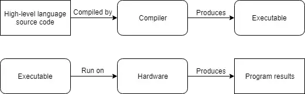
Since C++ programs are generally compiled, we’ll explore compilers in more detail shortly.
An interpreter is a program that directly executes the instructions in the source code without requiring them to be compiled into an executable first. Interpreters tend to be more flexible than compilers, but are less efficient when running programs because the interpreting process needs to be done every time the program is run. This means the interpreter is needed every time the program is run.
Here is a simplified representation of the interpretation process:
Most languages can be compiled or interpreted, however, traditionally languages like C, C++, and Pascal are compiled, whereas “scripting” languages like Perl and Javascript tend to be interpreted. Some languages, like Java, use a mix of the two.
High level languages have many desirable properties.
First, high level languages are much easier to read and write because the commands are closer to natural language that we use every day.
Second, high level languages require fewer instructions to perform the same task as lower level languages, making programs more concise and easier to understand. In C++ you can do something like a = b * 2 + 5; in one line. In assembly language, this would take 5 or 6 different instructions.
Third, programs can be compiled (or interpreted) for many different systems, and you don’t have to change the program to run on different CPUs (you just recompile for that CPU). As an example:
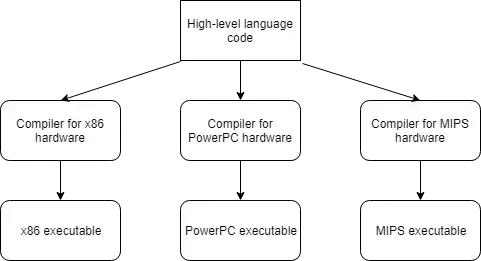
There are two general exceptions to portability.
The first is that many operating systems, such as Microsoft Windows, contain platform-specific capabilities that you can use in your code. These can make it much easier to write a program for a specific operating system, but at the expense of portability. In these tutorials, we will avoid any platform specific code.
The second is that some compilers also support compiler-specific extensions -- if you use these, your programs won’t be able to be compiled by other compilers that don’t support the same extensions without modification. We’ll talk more about these later, once you’ve installed a compiler.
Rules, Best practices, and warnings
As we proceed through these tutorials, we’ll highlight many important points under the following three categories:
Rule
Rules are instructions that you must do, as required by the language. Failure to abide by a rule will generally result in your program not working.
Best practice
Best practices are things that you should do, because that way of doing things is generally considered a standard or highly recommended. That is, either everybody does it that way (and if you do otherwise, you’ll be doing something people don’t expect), or it is superior to the alternatives.
Warning
Warnings are things that you should not do, because they will generally lead to unexpected results.
Basic Introduction in C
The C language was developed in 1972 by Dennis Ritchie at Bell Telephone laboratories, primarily as a systems programming language (a language to write operating systems with). Ritchie’s primary goals were to produce a minimalistic language that was easy to compile, allowed efficient access to memory, produced efficient code, and was self-contained (not reliant on other programs). For a high-level language, it was designed to give the programmer a lot of control, while still encouraging platform (hardware and operating system) independence (that is, the code didn’t have to be rewritten for each platform).
C ended up being so efficient and flexible that in 1973, Ritchie and Ken Thompson rewrote most of the Unix operating system using C. Many previous operating systems had been written in assembly. Unlike assembly, which produces programs that can only run on specific CPUs, C has excellent portability, allowing Unix to be easily recompiled on many different types of computers and speeding its adoption. C and Unix had their fortunes tied together, and C’s popularity was in part tied to the success of Unix as an operating system.
In 1978, Brian Kernighan and Dennis Ritchie published a book called “The C Programming Language”. This book, which was commonly known as K&R (after the authors’ last names), provided an informal specification for the language and became a de facto standard. When maximum portability was needed, programmers would stick to the recommendations in K&R, because most compilers at the time were implemented to K&R standards.
In 1983, the American National Standards Institute (ANSI) formed a committee to establish a formal standard for C. In 1989 (committees take forever to do anything), they finished, and released the C89 standard, more commonly known as ANSI C. In 1990 the International Organization for Standardization (ISO) adopted ANSI C (with a few minor modifications). This version of C became known as C90. Compilers eventually became ANSI C/C90 compliant, and programs desiring maximum portability were coded to this standard.
In 1999, the ISO committee released a new version of C called C99. C99 adopted many features which had already made their way into compilers as extensions, or had been implemented in C++.
and about C++
C++ (pronounced see plus plus) was developed by Bjarne Stroustrup at Bell Labs as an extension to C, starting in 1979. C++ adds many new features to the C language, and is perhaps best thought of as a superset of C, though this is not strictly true (as C99 introduced a few features that do not exist in C++). C++’s claim to fame results primarily from the fact that it is an object-oriented language. As for what an “object” is and how it differs from traditional programming methods, well, we’ll cover that in later chapters.
C++ was standardized in 1998 by the ISO committee (this means the ISO standards committee approved a document describing the C++ language, to help ensure all compilers adhere to the same set of standards). A minor update to the language was released in 2003 (called C++03).
Four major updates to the C++ language (C++11, C++14, C++17, and C++20) have been made since then, each adding additional functionality. C++11 in particular added a huge number of new capabilities, and is widely considered to be the new baseline version of the language. Future upgrades to the language are expected every three or so years, with the feature set for C++23 already starting to be formulated.
Each new formal release of the language is called a language standard (or language specification). Standards are named after the year they are released in. For example, there is no C++15, because there was no new standard in 2015.
C and C++’s philosophy
The underlying design philosophy of C and C++ can be summed up as “trust the programmer” -- which is both wonderful and dangerous. C++ is designed to allow the programmer a high degree of freedom to do what they want. However, this also means the language often won’t stop you from doing things that don’t make sense, because it will assume you’re doing so for some reason it doesn’t understand. There are quite a few pitfalls that new programmers are likely to fall into if caught unaware. This is one of the primary reasons why knowing what you shouldn’t do in C/C++ is almost as important as knowing what you should do.
Q&A
1
Q: What is C++ good at?
A: C++ excels in situations where high performance and precise control over memory and other resources is needed. Here are a few common types of applications that most likely would be written in C++:
Video gamesReal-time systems (e.g. for transportation, manufacturing, etc…)High-performance financial applications (e.g. high frequency trading)Graphical applications and simulationsProductivity / office applicationsEmbedded softwareAudio and video processingArtificial intelligence and neural networks
2
Q: Do I need to know C before I do these tutorials?
A:Nope! It’s perfectly fine to start with C++, and we’ll teach you everything you need to know (including pitfalls to avoid) along the way.
Once you know C++, it should be pretty easy to learn standard C if you ever have the need. These days, C is mostly used for niche use cases: code that runs on embedded devices, when you need to interact with other languages that can only interface with C, etc… For most other cases, C++ is recommended.
Introduction to C++ development
Before we can write and execute our first C++ program, we need to understand in more detail how C++ programs get developed. Here is a graphic outlining a simplistic approach:
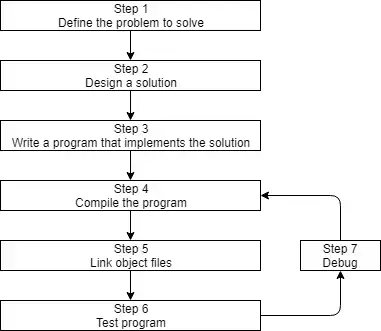
Step 1: Define the problem that you would like to solve
This is the “what” step, where you figure out what problem you are intending to solve. Coming up with the initial idea for what you would like to program can be the easiest step, or the hardest. But conceptually, it is the simplest. All you need is an idea that can be well defined, and you’re ready for the next step.
Here are a few examples:
“I want to write a program that will allow me to enter many numbers, then calculates the average.”“I want to write a program that generates a 2d maze and lets the user navigate through it. The user wins if they reach the end.”“I want to write a program that reads in a file of stock prices and predicts whether the stock will go up or down.”
Step 2: Determine how you are going to solve the problem
This is the “how” step, where you determine how you are going to solve the problem you came up with in step 1. It is also the step that is most neglected in software development. The crux(关键) of the issue is that there are many ways to solve a problem -- however, some of these solutions are good and some of them are bad. Too often, a programmer will get an idea, sit down, and immediately start coding a solution. This often generates a solution that falls into the bad category.
Typically, good solutions have the following characteristics:
They are straightforward (not overly complicated or confusing).They are well documented (especially around any assumptions being made or limitations).They are built modularly(模块化), so parts can be reused or changed later without impacting other parts of the program.They are robust(强大的), and can recover or give useful error messages when something unexpected happens.
When you sit down and start coding right away, you’re typically thinking “I want to do <something>”, so you implement the solution that gets you there the fastest. This can lead to programs that are fragile, hard to change or extend later, or have lots of bugs (technical defects).
Studies have shown that only 20% of a programmer’s time is actually spent writing the initial program. The other 80% is spent on maintenance, which can consist of debugging (removing bugs), updates to cope with changes in the environment (e.g. to run on a new OS version), enhancements (minor changes to improve usability or capability), or internal improvements (to increase reliability or maintainability).
Consequently, it’s worth your time to spend a little extra time up front (before you start coding) thinking about the best way to tackle a problem, what assumptions you are making, and how you might plan for the future, in order to save yourself a lot of time and trouble down the road.
We’ll talk more about how to effectively design solutions to problems in a future lesson.
Step 3: Write the program
In order to write the program, we need two things: First, we need knowledge of a programming language -- that’s what these tutorials are for! Second, we need a text editor to write and save our written programs. The programs we write using C++ instructions are called source code (often shortened to just code). It’s possible to write a program using any text editor you want, even something as simple as Windows’ notepad or Unix’s vi or pico. However, we strongly urge you to use an editor that is designed for programming (called a code editor). Don’t worry if you don’t have one yet. We’ll cover how to install a code editor shortly.
A typical editor designed for coding has a few features that make programming much easier, including:
Line numbering. Line numbering is useful when the compiler gives us an error, as a typical compiler error will state: *some error code/message, line 64*. Without an editor that shows line numbers, finding line 64 can be a real hassle.Syntax highlighting and coloring. Syntax highlighting and coloring changes the color of various parts of your program to make it easier to identify the different components of your program. Here’s an example of a C++ program with both line numbering and syntax highlighting:
#include <iostream>
int main()
{
std::cout << "Colored text!";
return 0;
} The examples we show in this tutorial will always have both line numbering and syntax highlighting to make them easier to follow.
An unambiguous font. Non-programming fonts often make it hard to distinguish between the number 0 and the letter O, or between the number 1, the letter l (lower case L), and the letter I (upper case i). A good programming font will ensure these symbols are visually differentiated in order to ensure one isn’t accidentally used in place of the other. All code editors should have this enabled by default, but a standard text editor might not.From Editor here: In Visual Studio, I highly recommand the Consola, which is just the font I used to present the text here
The programs you write will typically be named something.cpp, where something is replaced with the name of your choosing for the program (e.g. calculator, hi-lo, etc…). The .cpp extension tells the compiler (and you) that this is a C++ source code file that contains C++ instructions. Note that some people use the extension .cc instead of .cpp, but we recommend you use .cpp.
Best practice
Name your code files something.cpp, where something is a name of your choosing, and .cpp is the extension that indicates the file is a C++ source file.
Also note that many complex C++ programs have multiple .cpp files. Although most of the programs you will be creating initially will only have a single .cpp file, it is possible to write single programs that have tens or hundreds of .cpp files.
Once we’ve written our program, the next steps are to convert the source code into something that we can run, and then see whether it works! We’ll discuss those steps (4-7) in the next lesson.
Introduction to the compiler, linker, and libraries
Back to this map. Currently we will focus on the steps 4 - 7!
Step 4: Compiling your source code
In order to compile a C++ program, we use a C++ compiler. The C++ compiler sequentially goes through each source code (.cpp) file in your program and does two important tasks:
First, it checks your code to make sure it follows the rules of the C++ language. If it does not, the compiler will give you an error (and the corresponding line number) to help pinpoint what needs fixing. The compilation process will also be aborted until the error is fixed.
Second, it translates your C++ source code into a machine language file called an object file. Object files are typically named *name.o* or *name.obj*, where *name* is the same name as the.cpp file it was produced from.
If your program had 3 .cpp files, the compiler would generate 3 object files:
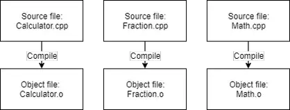
C++ compilers are available for many different operating systems. We will discuss installing a compiler shortly, so there is no need to do so now.
Step 5: Linking object files and libraries
After the compiler creates one or more object files, then another program called the linker** kicks in. The job of the linker is three fold:
First, to take all the object files generated by the compiler and combine them into a single executable program.
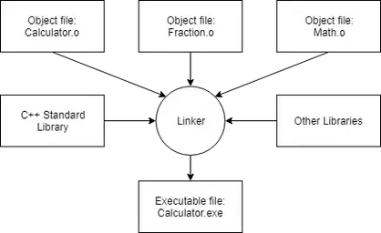
The C++ core language is actually fairly small and concise (and you’ll learn much of it in these tutorials). However, C++ also comes with an extensive library called the C++ Standard Library (usually shortened to standard library) that provides additional functionality that you can use in your programs. One of the most commonly used parts of the C++ standard library is the *iostream library*, which contains functionality for printing text on a monitor and getting keyboard input from a user. Almost every C++ program written utilizes the standard library in some form, so it’s very common for the standard library to get linked into your programs. Most linkers will automatically link in the standard library as soon as you use any part of it, so this generally isn’t something you need to worry about.
You can also optionally link in other libraries. For example, if you were going to write a program that played sounds, you probably would not want to write your own code to read in the sound files from disk, check to ensure they were valid, or figure out how to route the sound data to the operating system or hardware to play through the speaker -- that would be a lot of work! Instead, you’d probably download a library that already knew how to do those things, and use that. We’ll talk about how to link in libraries (and create your own!) in the appendix.
Third, the linker makes sure all cross-file dependencies are resolved properly. For example, if you define something in one .cpp file, and then use it in another .cpp file, the linker connects the two together. If the linker is unable to connect a reference to something with its definition, you’ll get a linker error, and the linking process will abort.
Once the linker is finished linking all the object files and libraries (assuming all goes well), you will have an executable file that you can then run!
For advanced readers
For complex projects, some development environments use a makefile, which is a file that describes how to build a program (e.g. which files to compile and link, or otherwise process in various ways). Entire books have been written about how to write and maintain makefiles, and they can be an incredibly powerful tool. However, because makefiles are not part of the C++ core language, nor do you need to use them to proceed, we’ll not discuss them as part of this tutorial series.
Steps 6 & 7: Testing and Debugging
This is the fun part (hopefully)! You are able to run your executable and see whether it produces the output you were expecting!
If your program runs but doesn’t work correctly, then it’s time for some debugging to figure out what’s wrong. We will discuss how to test your programs and how to debug them in more detail soon.
Integrated development environments (IDEs)
Note that steps 3, 4, 5, and 7 all involve software (editor, compiler, linker, debugger). While you can use separate programs for each of these activities, a software package known as an integrated development environment (IDE) bundles and integrates all of these features together. We’ll discuss IDEs, and install one, in the next section.
Installing an Integrated Development Environment (IDE)
An Integrated Development Environment (IDE) is a piece of software that contains all of the things you need to develop, compile, link, and debug your programs.
With a typical C++ IDE, you get a code editor that does line numbering and syntax highlighting. Many (but not all) IDEs include a C++ compiler and a linker, which the IDE will know how to interface with in order to convert your source code into an executable file. And when you need to debug your program, you can use the integrated debugger.
Furthermore, IDEs typically bundle a number of other helpful editing features, such as integrated help, name completion, auto-formatting, and sometimes a version control system. So while you could do all of these things separately, it’s much easier to install an IDE and have them all accessible from a single interface.
So let’s install one! The obvious next question is, “which one?”. Many IDEs are free (in price), and you can install multiple IDEs if you wish, so there’s no “wrong decision” to be made here. We’ll recommend a few of our favorites below.
If you have some other IDE in mind, that’s fine too. The concepts we show you in these tutorials should generally work for any decent modern IDE. However, various IDEs use different names, layouts, key mappings, etc… so you may have to do a bit of searching in your IDE to find the equivalent functionality.
Tip
To get the most value of this tutorial, we recommend installing an IDE that comes with a C++17 capable compiler.
If you’re restricted to using a compiler that only supports C++14 or C++11 (due to educational or business constraints), most of the lessons and examples will still work. However, if you encounter a lesson that uses concepts from C++17 (or newer) and you’re using an older language compiler, you’ll have to skip it or translate it to your version, which may or may not be easy.
You should not be using any compiler that does not support at least C++11 (which is typically considered the modern minimum spec for C++).
We recommend installing the newest version of a compiler. If you can’t use the newest version, these are the absolute minimum compiler versions with C++17 support:
GCC/G++ 7Clang++ 8Visual Studio 2017 15.7
Visual Studio (for Windows)
If you are developing on a Windows 10 machine, then we strongly recommend downloading Visual Studio 2022 Community.
Once you run the installer, you’ll eventually come to a screen that asks you what workload you’d like to install. Choose Desktop development with C++. If you do not do this, then C++ capabilities will not be available.
The default options selected on the right side of the screen should be fine, but please ensure that the Windows 10 SDK is selected.
Code::Blocks (for Linux or Windows)
if you are developing on Linux (or you are developing on Windows but want to write programs that you can easily port to Linux), we recommend Code::Blocks. Code::Blocks is a free, open source, cross-platform IDE that will run on both Linux and Windows.
For Windows users
Make sure to get the version of Code::Blocks that has MinGW bundled (it should be the one whose filename ends in mingw-setup.exe). This will install MinGW, which includes a Windows port of the GCC C++ compiler:
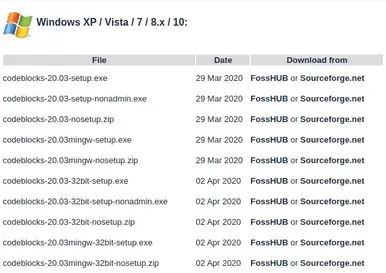
Code::Blocks 20.03 ships with an outdated version of MinGW that only supports C++17 (currently one version back from the latest version of C++). If you want to use the latest version of C++ (C++20), you will need to update MinGW. To do so, follow this procedure:
Install Code::Blocks as per the above.Close Code::Blocks if it is open.Open Windows File Explorer (Keyboard shortcut Win-E).Navigate to your Code::Blocks install directory (probably C:\Program Files (x86)\CodeBlocks).Rename the “MinGW” directory to “MinGW.bak” (in case something goes wrong).Open a browser and navigate to https://winlibs.com/.Download an updated version of MinGW. You probably want the one under Release Versions -> UCRT Runtime -> LATEST -> Win64 -> without LLVM/Clang/LLD/LLDB -> Zip archive.Extract the “mingw64” folder to your Code::blocks install directory.Rename “mingw64” to “MinGW”.
Once you have confirmed the updated compiler works, you can delete the old folder (“MinGW.bak”).
For Linux users
Some Linux installations may be missing dependencies needed to run or compile programs with Code::Blocks.
Debian-based Linux users (such as those on Mint or Ubuntu) may need to install the *build-essential* package. To do so from the terminal command line, type: sudo apt-get install build-essential.
Arch Linux users may need to install the base-devel package.
Users on other Linux variants will need to determine what their equivalent package manager and packages are.
When you launch Code::Blocks for the first time, you may get a Compilers auto-detection* dialog. If you do, make sure *GNU GCC Compiler is set as the default compiler and then select the OK button.
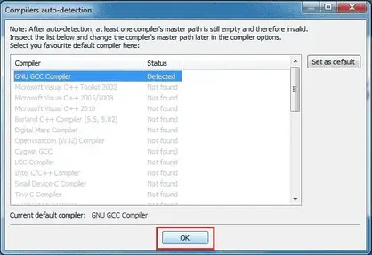
Q & A
Q: What do I do if I get a "Can’t find compiler executable in your configured search paths for GNU GCC Compiler" error?
A: Try the following:
If you’re on Windows, make sure you’ve downloaded the version of Code::Blocks WITH MinGW. It’s the one with “mingw” in the name.Try going to settings, compiler, and choose “reset to defaults”.Try going to settings, compiler, toolchain executables tab, and make sure “Compiler’s installation directory” is set to the MinGW directory (e.g. C:\Program Files (x86)\CodeBlocks\MinGW).Try doing a full uninstall, then reinstall.Try a different compiler.
Visual Studio Code (for experienced Linux, macOS, or Windows users)
Visual Studio Code (also called “VS Code”, not to be confused with the similarly named “Visual Studio Community”) is code editor that is a popular choice with experienced developers because it is fast, flexible, open source, works for multiple programming languages, and is available for many different platforms.
The downside is that VS Code is much harder to configure correctly than other choices on this list (and on Windows, harder to install as well). Before proceeding, we recommend reading through the installation and configuration documents linked below to ensure you understand and are comfortable with the steps involved.
Author’s note
Readers have reported many different challenges getting Visual Studio Code installed and configured correctly for C++. We do not recommend this option unless you are already familiar with Visual Studio Code, or have experience debugging issues and modifying configuration .json files. We cannot provide installation or configuration support on this site.
Also, a tip o’ the hat to user glibg10b for providing an initial draft of these instructions across multiple articles.
For Linux users
VS Code should be downloaded using your distribution’s package manager. The VS Code instructions for linux cover how to do this for various Linux distributions.
Once VS Code is installed, follow the instructions on how to configure C++ for linux.
For Mac users
The VS Code instructions for Mac detail how to install and setup VS Code for macOS.
Once VS Code is installed, follow the instructions on how to configure C++ for Mac.
For Windows users
The VS Code instructions for Windows detail how to install and setup VS Code for Windows.
Once VS Code is installed, follow the instructions on how to configure C++ for Windows.
2
Q: Can I use a web-based compiler?
Yes, for some things. While your IDE is downloading (or if you’re not sure you want to commit to installing one yet), you can continue this tutorial using a web-based compiler. We recommend one of the following:
- TutorialsPoint
- Wandbox (can choose different versions of GCC or Clang)
- Godbolt (can see assembly)
Web-based compilers are fine for dabbling and simple exercises. However, they are generally quite limited in functionality -- many won’t allow you to create multiple files or effectively debug your programs. You’ll want to migrate to a full IDE when you can.
3
Q: Can I use a command-line compiler (e.g. g++ on Linux)?
Yes, but we don’t recommend it for beginners. You’ll need to find your own editor and look up how to use it elsewhere. Using a command line debugger is not as easy as an integrated debugger, and will make debugging your programs more difficult.
4
Q: Can I use other code editors or IDEs, such as Eclipse, Sublime, or Notepad++?
Yes, but we don’t recommend it for beginners. There are many great code editors and IDEs that can be configured to support a wide variety of languages, and allow you to mix and match plugins to customize your experience however you like. However, many of these editors and IDEs require additional configuration to compile C++ programs, and there’s a lot that can go wrong during that process. For beginners, we recommend something that works out of the box, so you can spend more time learning to code and less time trying to figure out why your code editor isn’t working properly with your compiler or debugger.
When things go wrong (a.k.a. when IDE stands for “I don’t even…”)
IDE installations seem to cause their fair share of problems. Installation might fail outright (or installation might work but the IDE will have problems when you try to use it due to a configuration issue). If you encounter such issues, try uninstalling the IDE (if it installed in the first place), reboot your machine, disable your antivirus or anti-malware temporarily, and try the installation again.
If you’re still encountering issues at this point, you have two options. The easier option is to try a different IDE. The other option is to fix the problem. Unfortunately, the causes of installation and configuration errors are varied and specific to the IDE software itself, and we’re unable to effectively advise on how to resolve such issues. In this case, we recommend copying the error message or problem you are having into your favorite search engine (such as Google or Duck Duck Go) and trying to find a forum post elsewhere from some poor soul who has inevitably encountered the same issue. Often there will be suggestions on things you can try to remedy the issue.
Compile our first program!
Before we can write our first program, we need to learn how to create new programs within our Integrated Development Environment (IDE). In this lesson, we’ll cover how to do that, and you’ll also compile and execute your first program!
Projects
To write a C++ program inside an IDE, we typically start by creating a new project (we’ll show you how to do this in a bit). A project is a container that holds all of your source code files, images, data files, etc… that are needed to produce an executable (or library, website, etc…) that you can run or use. The project also saves various IDE, compiler, and linker settings, as well as remembering where you left off, so that when you reopen the project later, the state of the IDE can be restored to wherever you left off. When you choose to compile your program, all of the .cpp files in the project will get compiled and linked.
Each project corresponds to one program. When you’re ready to create a second program, you’ll either need to create a new project, or overwrite the code in an existing project (if you don’t want to keep it). Project files are generally IDE specific, so a project created for one IDE will need to be recreated in a different IDE.
Best practice
Create a new project for each new program you write.
Console projects
When you create a new project, you’ll generally be asked what type of project you want to create. All of the projects that we will create in this tutorial will be console projects. A console project means that we are going to create programs that can be run from the Windows, Linux, or Mac console.
Here’s a screenshot of the Windows console: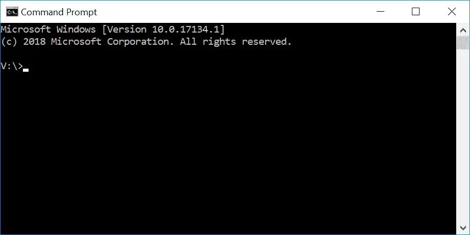
By default, console applications have no graphical user interface (GUI), they print text to the console, read input from the keyboard, and are compiled into stand-alone executable files. This is perfect for learning C++, because it keeps the complexity to a minimum, and ensures things work on a wide variety of systems.
Don’t worry if you’ve never used a console before, or don’t know how to access it. We’ll compile and launch our programs through our IDEs (which will invoke the console when necessary).
Workspaces / solutions
When you create a new project for your program, many IDEs will automatically add your project to a “workspace” or a “solution” (the term varies by IDE). A workspace or solution is a container that can hold one or more related projects. For example, if you were writing a game and wanted to have a separate executable for single player and multiplayer, you’d need to create two projects. It wouldn’t make sense for both of these projects to be completely independent -- after all, they are part of the same game. Most likely, each would be configured as a separate project within a single workspace/solution.
Although you can add multiple projects to a single solution, we generally recommend creating a new workspace or solution for each program, especially while learning. It’s simpler and there’s less chance of something going wrong.
Writing your first program
Traditionally, the first program programmers write in a new language is the infamous [hello world program](https://en.wikipedia.org/wiki/Hello_world), and we aren’t going to deprive you of that experience! You’ll thank us later. Maybe.
Creating a project in Visual Studio 2019 (or newer)
When you run Visual Studio 2019 (or newer), you should see a dialog that looks like this:
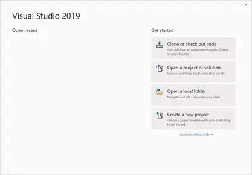
Select *Create a new project*.
You’ll then see a dialog that looks like this:
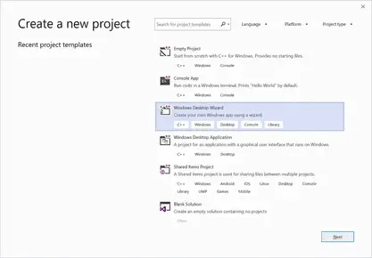
If you’ve already opened a prior project, you can access this dialog via the *File menu > New > Project*.
Select *Windows Desktop Wizard* and click *Next*. If you don’t see this, then you probably forgot to choose to install the *Desktop development with C++* workload when you installed Visual Studio.
Next, you’ll see a dialog that looks like this:
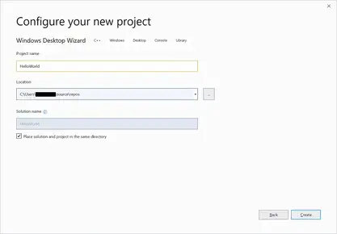
Replace the existing project name with HelloWorld.
It’s recommended that you also check the *Place solution and project in the same directory*, as this reduces the number of subdirectories that get created with each project.
Click *Create* to continue.
Finally, you’ll see one last dialog:
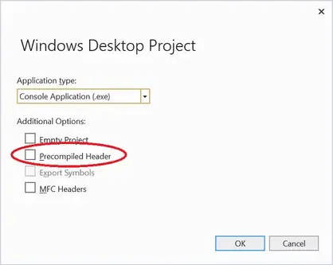
Make sure the *Application type* is set as *Console Application (.exe)* and that the *Precompiled Header* option is unselected. Then click *OK*.
You’ve now created a project! Jump down to the Visual Studio Solution Explorer section below to continue.
Q & A
Q: What are precompiled headers and why are we turning them off?
In large projects (those with many code files), precompiled headers can improve compilation speed by avoiding some redundant compilation that tends to occur in larger projects.
However, precompiled headers require extra work to use, and for small projects (such as those you’ll create in our tutorials) make little to no difference in compilation times.
For this reason, we recommend turning precompiled headers off initially, and only enabling them later if and when you find your compilation times suffering.
Creating a project in Visual Studio 2017 or older
To create a new project in Visual Studio 2017 or older, go to the *File menu > New > Project*. A dialog box will pop up that looks something like this:
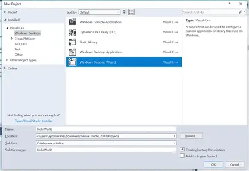
First, make sure *Visual C++* is listed on the left side. If you don’t see *Visual C++*, then you probably forgot to choose to install the *Desktop development with C++* workload when you installed Visual Studio.
If you’re using Visual Studio 2017 v15.3 or newer, underneath *Visual C++*, select *Windows Desktop* and then select *Windows Desktop Wizard* in the main window.
If you don’t see *Windows Desktop* as an option, you’re probably using an older version of Visual Studio. That’s fine. Instead, choose *Win32* and then *Win32 Console Application* in the main window.
Down below, in the *Name* field, enter the name of your program (replace the existing name withHelloWorld). In the Location field, you can optionally select a different location for your project to be placed into. The default is fine for now.
Click *OK*. If you’re using an older version of Visual Studio, the Win32 Application Wizard will launch. Press *Next*.
At this point, you should see a wizard dialog that looks something like this (older versions of Visual Studio use a different style, but have most of the same options):
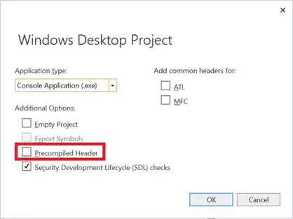
Make sure you uncheck *Precompiled Header*.
Then click *Ok* or *Finish*. Now your project is created!
Visual Studio Solution Explorer
On the left or right side of the window, you should see a window titled *Solution Explorer*. Inside this window, Visual Studio has created a solution for you (*Solution ‘HelloWorld’*). Within that, with the name in bold, is your new project (*HelloWorld*). Within the project, Visual Studio has created a number of files for you, including *HelloWorld.cpp* (underneath the *Source Files* tree item). You may also see some other .cpp or .h files, which you can ignore for now.
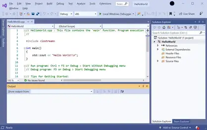
In the text editor, you will see that Visual Studio has already opened *HelloWorld.cpp* and created some code for you. Select and delete all of the code, and type/copy the following into your IDE:
#include <iostream>
int main()
{
std::cout << "Hello, world!";
return 0;
} To compile your program, either press *F7* (if this doesn’t work, try *Ctrl-Shift-B*) or go to the *Build menu > Build Solution*. If all goes well, you should see the following appear in the Output window:
1>------ Build started: Project: HelloWorld, Configuration: Debug Win32 ------
1>HelloWorld.cpp
1>HelloWorld.vcxproj -> c:\users\alex\documents\visual studio 2017\Projects\HelloWorld\Debug\HelloWorld.exe
========== Build: 1 succeeded, 0 failed, 0 up-to-date, 0 skipped ========== This means your compile was successful!
Q & A
Q: I got error C1010 ("fatal error C1010: unexpected end of file while looking for precompiled header. Did you forget to add ‘#include "stdafx.h"’ to your source?"). What now?
You forgot to turn off precompiled headers when you created your project. Recreate your project and make sure to disable precompiled headers.
To run your compiled program, press *Ctrl-F5*, or go to the *Debug menu* and choose *Start Without Debugging*. You will see the following:
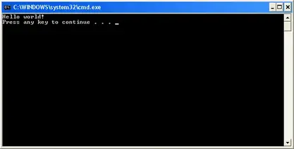
That is the result of your program! Congratulations, you’ve compiled and run your first program!
Related content
When you run a program directly from Visual Studio, you may see an additional line of output that looks something like this:
C:\Users\Alex\source\repos\Project6\Debug\Project6.exe (process 21896) exited with code 0. This is normal. Visual Studio is providing some additional information about whether your program exited normally or abnormally.
Creating a project in Code::Blocks
To create a new project, go to *File menu > New > Project*. A dialog box will pop up that looks like this:
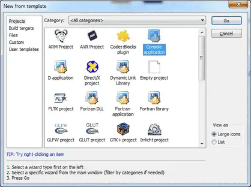
Select *Console application* and press the *Go (or Create)* button.
If you see a console application wizard dialog, press *Next*, make sure C++ is selected and press *Next* again.
Now you will be asked to name your project. Title the projectHelloWorld. You can save it wherever you wish. On Windows, we recommend you to save it in a subdirectory of the C drive, such as C:\CBProjects.``
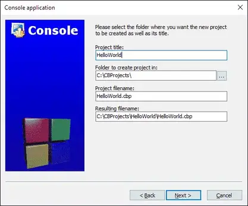
You may see another dialog asking you which configurations you want enabled. The defaults should be fine here, so select *Finish*.
Now your new project has been created.
On the left side of the screen, you should see a *Management* window, with the *Projects* tab selected. Inside that window, you’ll see a *Workspace* folder, with your *HelloWorld* project inside of it:
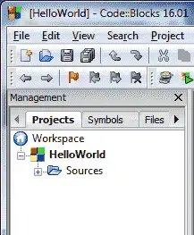
Inside the *HelloWorld* project, expand the *Sources* folder, and double click on “main.cpp”. You will see that a hello world program has already been written for you!
Replace that one with the following:
#include <iostream>
int main()
{
std::cout << "Hello, world!";
return 0;
} To build your project, press *Ctrl-F9*, or go to *Build menu > Build*. If all goes well, you should see the following appear in the Build log window:
-------------- Build: Debug in HelloWorld (compiler: GNU GCC Compiler)---------------
mingw32-g++.exe -Wall -fexceptions -g -std=c++14 -c C:\CBProjects\HelloWorld\main.cpp -o obj\Debug\main.o
mingw32-g++.exe -o bin\Debug\HelloWorld.exe obj\Debug\main.o
Output file is bin\Debug\HelloWorld.exe with size 1.51 MB
Process terminated with status 0 (0 minute(s), 0 second(s))
0 error(s), 0 warning(s) (0 minute(s), 0 second(s)) This means your compile was successful!
To run your compiled program, press *Ctrl-F10*, or go to *Build menu > Run*. You will see something similar to the following:
That is the result of your program!
For Linux users
Linux users may need to install the additional packages before Code::Blocks will compile.
Creating a project in VS Code
To start a new project, go to the *View > Explorer* menu (or press *Ctrl-Shift-E*). This will open the explorer pane. If you haven’t previously opened a project, you should see an *Open Folder* button in the explorer pane -- press it. If there is already an open project and you want to start a new one, choose *File > Open Folder* from the top nav.
Inside the dialog that opens, create a new folder named *HelloWorld* and then select this folder. This folder will be your project folder.
Next, we need to create the file that will contain our source code. Choose *File > New File* from the top nav, or click the *New File icon* to the right of *HELLOWORLD* in the explorer pane.
Name your file *main.cpp* and add the following contents to it:
#include <iostream>
int main()
{
std::cout << "Hello, world!";
return 0;
} To compile *main.cpp* and run the program, make sure *main.cpp* is open in the main pane, and then either choose *Run > Run Without Debugging* from the top nav, or click the *v* to the right of the play icon to the right of *main.cpp* tab and choose *Run C/C++ File*.
Next, choose the *g++ build and debug active file* option (macOS users should choose *clang++* instead of *g++*). Switch the tab from *DEBUG CONSOLE* to *TERMINAL* at the bottom of the window.
If the terminal contains the text “Hello, world!”, then congratulations, you’ve just run your first C++ program!
If you’re using g++ on the command line
In this case, you don’t need to create a project. Simply paste the following into a text file named HelloWorld.cpp and save your file:
#include <iostream>
int main()
{
std::cout << "Hello, world!";
return 0;
} From the command line, type:
g++ -o HelloWorld HelloWorld.cpp This will compile and link HelloWorld.cpp. To run it, type:
`HelloWorld (or possibly ./HelloWorld), and you will see the output of your program.`
If you’re using other IDEs or a web-based compiler
You will have to figure out how to do the following on your own:
Create a console project (IDEs only)Add a .cpp file to the project (IDEs only, if one isn’t auto-created for you)Paste the following code into the file:
#include <iostream>
int main()
{
std::cout << "Hello, world!";
return 0;
}- Compile the project
- Run the project
If compiling fails
It’s okay, take a deep breath. We can probably fix it. :)
First, look at the error message that the compiler gave you. Most often, it will contain a line number indicating which line was in error. Examine both that line and the lines around it, and make sure there are no typos or misspellings. Also make sure you’re not including line numbers in your code (your editor should be providing those).
Second, you could view some Q & A to check the answer.
Third, read the comments below the lesson containing the example you’re compiling -- someone may have encountered the same issue and provided a solution.
Finally, if all of the above fail, try searching for your error message on your favorite search engine. It’s likely someone else has encountered this issue before and figured out how to fix it.
If your program runs but the console window flashes and closes immediately
When a console program is run, the console window will open and any output from the program will be written into the console window.
When the program has finished running, most modern IDEs will keep the console open (until you press a key) so you can inspect the results of the program before continuing. However, some older IDEs will automatically close the console window when the program finishes running. This is generally not what you want.
If your IDE closes the console window automatically, the following two steps can be used to ensure the console pauses at end of the program.
First, add or ensure the following lines are near the top of your program:
#include <iostream>
#include <limits> Second, add the following code at the end of the main() function (just before the return statement):
std::cin.clear(); // reset any error flags
std::cin.ignore(std::numeric_limits<std::streamsize>::max(), '\n'); // ignore any characters in the input buffer until we find a newline
std::cin.get(); // get one more char from the user (waits for user to press enter) This will cause your program to wait for the user to press enter before continuing (you may have to press enter twice), which will give you time to examine your program’s output before your IDE closes the console window.
Other solutions, such as the commonly suggested
system("pause") `solution may only work on certain operating systems and should be avoided.`
If the console window doesn’t open at all and your program doesn’t appear to be running, your anti-virus or anti-malware may also be blocking execution of the program. If that’s the case, try temporarily disabling your scanners and see if the problem resolves.
What is the difference between the compile, build, rebuild, clean, and run/start options in my IDE?
Previously, we showed that to produce an executable that can be run, each code file in a program is compiled into an object file, and then the object files are linked into an executable.
When a code file is compiled, your IDE may cache the resulting object file. That way, if the program is compiled again in the future, any code file that hasn’t been modified doesn’t need to be recompiled -- the cached object file from last time can be reused. This can speed up compilation times significantly (at the cost of a little bit of disk space).
With that in mind, here’s what each of the options typically does:
Build compiles all modified code files in the project or workspace/solution, and then links the object files into an executable. If no code files have been modified since the last build, this option does nothing.Clean removes all cached objects and executables so the next time the project is built, all files will be recompiled and a new executable produced.Rebuild does a “clean”, followed by a “build”.Compile recompiles a single code file (regardless of whether it has been cached previously). This option does not invoke the linker or produce an executable.Run/start executes the executable from a prior build. Some IDEs (e.g. Visual Studio) will invoke a “build” before doing a “run” to ensure you are running the latest version of your code. Otherwise (e.g. Code::Blocks) will just execute the prior executable.
Although we talk informally about “compiling” our programs, to actually compile our programs we will typically choose the “build” (or “run”) option in our IDE to do so.
Conclusion
Congratulations, you made it through the hardest part of this tutorial (installing the IDE and compiling your first program)!
Don’t worry if you don’t understand what the different lines in the Hello World program do. We’ll examine and explain each line in detail at the start of the next chapter.
A few common C++ problems
In this section, we’ll address some of the common issues that new programmers seem to run across with fairly high probability. This is not meant to be a comprehensive list of compilation or execution problems, but rather a pragmatic list of solutions to very basic issues. If you have any suggestions for other issues that might be added to this list, post them in the comments section below.
General run-time issues
Q: When executing a program, the console window blinks and then closes immediately.
First, add or ensure the following lines are near the top of your program (Visual Studio users, make sure these lines appear after #include “pch.h” or #include “stdafx.h”, if those exist):
#include <iostream>
#include <limits> Second, add the following code at the end of your main() function (right before the return statement):
std::cin.clear(); // reset any error flags
std::cin.ignore(std::numeric_limits<std::streamsize>::max(), '\n'); // ignore any characters in the input buffer until we find an enter character
std::cin.get(); // get one more char from the user This will cause your program to wait for the user to press a key before continuing, which will give you time to examine your program’s output before your operating system closes the console window.
Other solutions, such as the commonly suggested system(“pause”) solution may only work on certain operating systems and should be avoided.
Older versions of Visual Studio may not pause when the program is run in *Start With Debugging (F5)* mode. Try running in *Start Without Debugging (Ctrl-F5)* mode.
Q: I ran my program and get a window but no output.
Your virus scanner or anti-malware may be blocking execution. Try disabling it temporarily and see if that’s the issue.
Q: My program compiles but it isn’t working correctly. What do I do?
Debug it! There are tips on how to diagnose and debug your programs later in chapter 3.
General compile-time issues
Q: When I compile my program, I get an error about unresolved external symbol _main or _WinMain@16
This means your compiler can’t find your main() function. All programs must include a main() function.
There are a few things to check:a) Does your code include a function named main?b) Is main spelled correctly?c) When you compile your program, do you see the file that contains function main() get compiled? If not, either move the main() function to one that is, or add the file to your projectd) Did you create a console project? Try creating a new console project.
Q: I’m trying to use C++11/14/17/XX functionality and it doesn’t work
If your compiler is old, it may not support these more recent additions to the language. In that case, upgrade your compiler.
For modern IDEs/compilers, your compiler may be defaulting to an older language standard.
Q: When trying to use cin, cout, or endl, the compiler says cin, cout, or endl is an ‘undeclared identifier’
First, make sure you have included the following line near the top of your file:
#include <iostream> Second, make sure each use of cin, cout, and endl are prefixed by “std::”. For example:
std::cout << "Hello world!" << std::endl; If this doesn’t fix your issue, then it may be that your compiler is out of date, or the install is corrupted. Try reinstalling and/or upgrading to the latest version of your compiler.
Q: When trying to use endl to end a printed line, the compiler says end1 is an ‘undeclared identifier’
Make sure you do not mistake the letter l (lower case L) in endl for the number 1. endl is all letters.
Make sure your editor is using a font that makes clear the differences between the letter lower case L, upper case i, and the number 1. Also the letter capital o and the number zero can easily be confused in many non-programming fonts.
Q: When compiling my program, I get a ‘no newline at end of file’ error
The C++ standard requires that all source (.cpp) files end in a newline. It’s silly, but it is what it is. Go to the bottom of your source file(s), hit enter, save, and recompile.
Visual Studio issues
Q: When compiling with Microsoft Visual C++, you get a C1010 fatal error, with an error message like "c:\vcprojects\test.cpp(263) :fatal error C1010: unexpected end of file while looking for precompiled header directive"
This error occurs when the Microsoft Visual C++ compiler is set to use precompiled headers but one (or more) of your C++ code files does not #include “stdafx.h” or #include “pch.h” as the first line of the code file.
Our suggested fix is to turn off precompiled headers,
If you would like to keep precompiled headers turned on, to fix this problem, simply locate the file(s) producing the error (in the above error, test.cpp is the culprit), and add the following line at the very top of the file(s):
#include "pch.h" Older versions of Visual Studio use “stdafx.h” instead of “pch.h”, so if pch.h doesn’t resolve the issue, try stdafx.h.
Note that for programs with multiple files, every C++ code file needs to start with this line.
Q: Visual Studio gives the following error: "1MSVCRTD.lib(exe_winmain.obj) : error LNK2019: unresolved external symbol _WinMain@16 referenced in function "int __cdecl invoke_main(void)" (?invoke_main@@YAHXZ)"
You’ve likely created a Windows graphical application rather than a console application. Recreate your project, and make sure to create it as a Windows (or Win32) *Console* project.
Q: When I compile my program, I get a warning about "Cannot find or open the PDB file"
This is a warning, not an error, so it shouldn’t impact your program. However, it is annoying. To fix it, go into the Debug menu -> Options and Settings -> Symbols, and check “Microsoft Symbol Server”.
Something else
Q: I have some other problem that I can’t figure out. How can I get an answer quickly?
As you progress through the material, you’ll undoubtedly have questions or run into unexpected problems. What to do next depends on your problem. But in general, there are a few things you can try.
First, ask a search engine. Find a good way to phrase your question and do a search. If you are searching an error message, paste in the exact error message using quotes (exclude any filenames or line numbers). Odds are someone has already asked the same question and there is an answer waiting for you.
If that fails, ask on a Q&A board. There are websites designed for programming questions and answers, likeStack Overflow. Try posting your question there. Remember to be thorough about what your problem is, and include all relevant information like what OS you’re on and what IDE you’re using.
Configuring your compiler: Build configurations
A build configuration (also called a build target) is a collection of project settings that determines how your IDE will build your project. The build configuration typically includes things like what the executable will be named, what directories the IDE will look in for other code and library files, whether to keep or strip out debugging information, how much to have the compiler optimize your program, etc… Generally, you will want to leave these settings at their default values unless you have a specific reason to change something.
When you create a new project in your IDE, most IDEs will set up two different build configurations for you: a release configuration, and a debug configuration.
The debug configuration is designed to help you debug your program, and is generally the one you will use when writing your programs. This configuration turns off all optimizations, and includes debugging information, which makes your programs larger and slower, but much easier to debug. The debug configuration is usually selected as the active configuration by default. We’ll talk more about debugging techniques in a later lesson.
The release configuration is designed to be used when releasing your program to the public. This version is typically optimized for size and performance, and doesn’t contain the extra debugging information. Because the release configuration includes all optimizations, this mode is also useful for testing the performance of your code (which we’ll show you how to do later in the tutorial series).
When the Hello World program was built using Visual Studio, the executable produced in the debug configuration was 65kb, whereas the executable built in the release version was 12kb. The difference is largely due to the extra debugging information kept in the debug build.
Although you can create your own custom build configurations, you’ll rarely have a reason to unless you want to compare two builds made using different compiler settings.
Best practice
Use the debug build configuration when developing your programs. When you’re ready to release your executable to others, or want to test performance, use the release build configuration.
Some IDEs (e.g. Visual Studio) also create separate build configurations for different platforms. For example, Visual Studio creates build configurations for both the x86 (32-bit) and the x64 (64-bit) platforms.
Switching between build configurations
For Visual Studio users
There are multiple ways to switch between debug and release in Visual Studio. The easiest way is to set your selection directly from the Solution Configurations dropdown in the Standard Toolbar Options:
Set it to Debug for now.
You can also access the configuration manager dialog by selecting Build menu > Configuration Manager, and change the active solution configuration.
To the right of the Solutions Configurations dropdown, Visual Studio also has a Solutions Platform dropdown that allows you to switch between x86 (32-bit) and x64 (64-bit) platforms.
For Code::Blocks users
In Code::Blocks, you should see an item called Build Target in the Compiler toolbar:
Set it to Debug for now.
For GCC/G++ users
Add-ggdbto the command line when debugging and-O2 -DNDEBUGfor release builds. Use the former for now.
For VS Code users
When you first ran your program, a new file called tasks.json was created under the .vscode folder in the explorer pane. Open the tasks.json file, find “args”, and then locate the line “${file}” within that section.
Above the “${file}” line, add a new line containing the following command (one per line) when debugging:"-ggdb",
Above the “${file}” line, add new lines containing the following commands (one per line) for release builds:"-O2","-DNDEBUG",
Modifying build configurations
In the next few lessons, we’ll show you how to tweak some settings in your build configurations. Whenever changing a project setting, we recommend making the change in all build configurations.
This will help prevent making the change to the wrong build configuration, and ensure the change is still applied if you happen to switch build configurations later.
Tip
Whenever you update your project settings, make the change for all build configurations (unless it’s not appropriate for some reason).
A **build configuration** (also called a **build target**) is a collection of project settings that determines how your IDE will build your project. The build configuration typically includes things like what the executable will be named, what directories the IDE will look in for other code and library files, whether to keep or strip out debugging information, how much to have the compiler optimize your program, etc… Generally, you will want to leave these settings at their default values unless you have a specific reason to change something.
When you create a new project in your IDE, most IDEs will set up two different build configurations for you: a release configuration, and a debug configuration.
The debug configuration is designed to help you debug your program, and is generally the one you will use when writing your programs. This configuration turns off all optimizations, and includes debugging information, which makes your programs larger and slower, but much easier to debug. The debug configuration is usually selected as the active configuration by default. We’ll talk more about debugging techniques in a later lesson.
The release configuration is designed to be used when releasing your program to the public. This version is typically optimized for size and performance, and doesn’t contain the extra debugging information. Because the release configuration includes all optimizations, this mode is also useful for testing the performance of your code (which we’ll show you how to do later in the tutorial series).
When the Hello World program was built using Visual Studio, the executable produced in the debug configuration was 65kb, whereas the executable built in the release version was 12kb. The difference is largely due to the extra debugging information kept in the debug build.
Although you can create your own custom build configurations, you’ll rarely have a reason to unless you want to compare two builds made using different compiler settings.
Best practice
Use the *debug* build configuration when developing your programs. When you’re ready to release your executable to others, or want to test performance, use the *release* build configuration.
Some IDEs (e.g. Visual Studio) also create separate build configurations for different platforms. For example, Visual Studio creates build configurations for both the x86 (32-bit) and the x64 (64-bit) platforms.
Switching between build configurations
For Visual Studio users
There are multiple ways to switch between debug and release in Visual Studio. The easiest way is to set your selection directly from the Solution Configurations dropdown in the Standard Toolbar Options:
Set it to *Debug* for now.
You can also access the configuration manager dialog by selecting Build menu > Configuration Manager, and change the active solution configuration.
To the right of the Solutions Configurations dropdown, Visual Studio also has a Solutions Platform dropdown that allows you to switch between x86 (32-bit) and x64 (64-bit) platforms.
For Code::Blocks users
In Code::Blocks, you should see an item called Build Target in the Compiler toolbar:
Set it to *Debug* for now.
For GCC/G++ users
Add -ggdb to the command line when debugging and-O2 -DNDEBUGfor release builds. Use the former for now.
For VS Code users
When you first ran your program, a new file called *tasks.json* was created under the *.vscode* folder in the explorer pane. Open the *tasks.json* file, find *“args”*, and then locate the line *“${file}”* within that section.
Above the *“${file}”* line, add a new line containing the following command (one per line) when debugging:"-ggdb",
Above the *“${file}”* line, add new lines containing the following commands (one per line) for release builds:"-O2","-DNDEBUG",
Modifying build configurations
In the next few lessons, we’ll show you how to tweak some settings in your build configurations. Whenever changing a project setting, we recommend making the change in all build configurations.
This will help prevent making the change to the wrong build configuration, and ensure the change is still applied if you happen to switch build configurations later.
Tip
Whenever you update your project settings, make the change for all build configurations (unless it’s not appropriate for some reason).
Configuring your compiler: Compiler extensions
The C++ standard defines rules about how programs should behave in specific circumstances. And in most cases, compilers will follow these rules. However, many compilers implement their own changes to the language, often to enhance compatibility with other versions of the language (e.g. C99), or for historical reasons. These compiler-specific behaviors are called compiler extensions.
Writing a program that makes use of a compiler extension allows you to write programs that are incompatible with the C++ standard. Programs using non-standard extensions generally will not compile on other compilers (that don’t support those same extensions), or if they do, they may not run correctly.
Frustratingly, compiler extensions are often enabled by default. This is particularly damaging for new learners, who may think some behavior that works is part of official C++ standard, when in fact their compiler is simply over-permissive.
Because compiler extensions are never necessary, and cause your programs to be non-compliant with C++ standards, we recommend turning compiler extensions off.
Best practice
Disable compiler extensions to ensure your programs (and coding practices) remain compliant with C++ standards and will work on any system.
Disabling compiler extensions
For Visual Studio users
To disable compiler extensions, right click on your project name in the *Solution Explorer* window, then choose *Properties*:
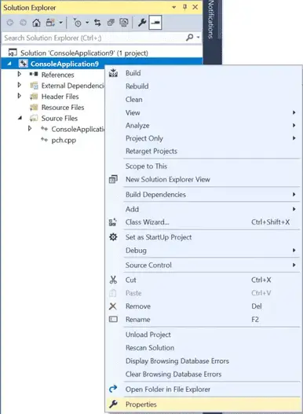
From the *Project* dialog, first make sure the *Configuration* field is set to *All Configurations*.
Then, click C/C++ > Language tab, and set Conformance mode to Yes (/permissive-) (if it is not already set to that by default).
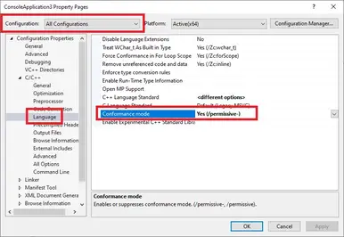
For Code::Blocks users
Disable compiler extensions via Settings menu > Compiler > Compiler flags tab, then find and check the -pedantic-errors option.
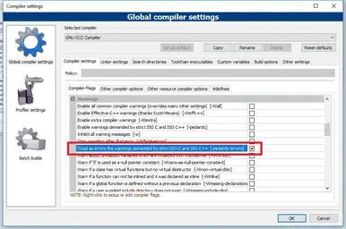
For GCC/G++ users
You can disable compiler extensions by adding the *-pedantic-errors* flag to the compile command line.
For VS Code users
Open the tasks.json file, find“args”, and then locate the line“$\{file\}”within that section.Above the"${file}"line, add a new line containing the following commands:
"-pedantic-errors", As of the time of writing, VS Code does not automatically add a newline to the end of code files that are missing it (something that is pedantically required by the C++ standard). Fortunately, we can tell VS Code to do so:
Open VS Code and go to *File (Code if using a Mac) > Preferences > Settings*. This will open a settings dialog.Enterinsert final newlineinto the search bar.In both the *Workspace Settings* and *User Settings* tabs, ensure the checkbox labeled *Files: Insert Final Newline* is checked.
Related content
Xcode users can refer to Rory’s comment, who kindly provided instructions.
A reminder
These settings are applied on a per-project basis. You need to set them every time you create a new project, or create a template project with those settings once and use that to create new projects.
Configuring your compiler: Warning and error levels
When you write your programs, the compiler will check to ensure you’ve followed the rules of the C++ language
If you have done something that definitively violates the rules of the language, during compilation the compiler will emit an error, providing both line number containing the error, and some text about what was expected vs what was found. The actual error may be on that line, or on a preceding line. Once you’ve identified and fixed the erroneous line(s) of code, you can try compiling again.
In other cases, the compiler may find code that seems like it might be in error, but the compiler can’t be sure (remember the motto: “trust the programmer”). In such cases, the compiler may opt to issue a warning. Warnings do not halt compilation, but are notices to the programmer that something seems amiss.
Best practice
Don’t let warnings pile up. Resolve them as you encounter them (as if they were errors). Otherwise a warning about a serious issue may be lost amongst warnings about non-serious issues.
In most cases, warnings can be resolved either by fixing the issue the warning is pointing out, or by rewriting the line of code generating the warning in such a way that the warning is no longer generated.
In rare cases, it may be necessary to explicitly tell the compiler to not generate a particular warning for the line of code in question. C++ does not support an official way to do this, but many individual compilers (including Visual Studio and GCC) offer solutions (via non-portable #pragma directives) to temporarily disable warnings.
Increasing your warning levels
By default, most compilers will only generate warnings about the most obvious issues. However, you can request your compiler be more assertive about providing warnings for things it finds strange.
Best practice
Turn your warning levels up to the maximum, especially while you are learning. It will help you identify possible issues.
For Visual Studio users
To increase your warning levels, right click on your project name in the Solution Explorer window, then choose Properties:
From the Project dialog, first make sure the Configuration field is set to All Configurations. Then select C/C++ > General tab and set Warning level to Level4 (/W4):
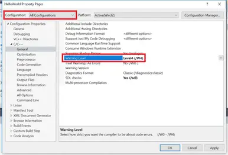
Note: Do not choose EnableAllWarnings (/Wall) or you will be buried in warnings generated by the C++ standard library.
Visual Studio disables signed/unsigned conversion warnings by default, and those are useful, so if you are using Visual Studio 2019 or newer, let’s enable those:
From C/C++ > Command Line tab, underAdditional Options, add/w44365
This tells the compiler to enable signed/unsigned conversion warnings at warning level 4 (which you enabled above).-
From C/C++ > External Includes tab, set External Header Warning Level to Level3 (/external:W3). This tells the compiler to compile standard library headers at warning level 3 (instead of 4) so that compiling those headers doesn’t trigger this warning.
-
The “External Includes” tab isn’t shown in the graphic above, but appears in VS Community 2019 or newer between the “Browse Information” and “Advanced” tabs. See this link, which contains a recent photo of the dialog containing the “External Includes” tab.
For Code::Blocks users
From Settings menu > Compiler > Compiler settings tab, find and check the options that correlate with -Wall, -Weffc++, and -Wextra:
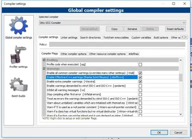
Then go to the Other compiler options tab, and add -Wconversion -Wsign-conversion to the following text edit area:
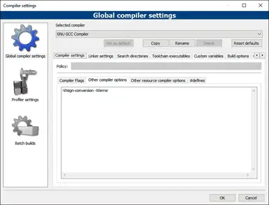
Note: The *-Werror* parameter is explained below.
For GCC/G++ users
Add the following flags to your command line: -Wall -Weffc++ -Wextra -Wconversion -Wsign-conversion
For VS Code users
Open the tasks.json file, find “args”, and then locate the line *“${file}”* within that section.
Above the *“${file}”* line, add new lines containing the following commands (one per line):
"-Wall",
"-Weffc++",
"-Wextra",
"-Wconversion",
"-Wsign-conversion", Treat warnings as errors
It is also possible to tell your compiler to treat all warnings as if they were errors (in which case, the compiler will halt compilation if it finds any warnings). This is a good way to enforce the recommendation that you should fix all warnings (if you lack self-discipline, which most of us do).
Best practice
Enable “Treat warnings as errors”. This will force you to resolve all issues causing warnings.
For Visual Studio users
To treat warnings as errors, right click on your project name in the *Solution Explorer* window, then choose *Properties*:
From the *Project* dialog, first make sure the *Configuration* field is set to *All Configurations*.
Then select *C/C++ > General tab* and set *Treat Warnings As Errors* to *Yes (/WX)*.
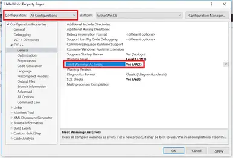
For Code::Blocks users
From Settings menu > Compiler > Other compiler options tab, add -Werror to the text edit area:
For GCC/G++ users
Add the following flag to your command line: *-Werror*
For VS Code users
In the tasks.json file, add the following flags before “${file}”, one per line:
"-Werror",Configuring your compiler: Choosing a language standard
With many different versions of C++ available (C++98, C++03, C++11, C++14, C++17, C++20, etc…) how does your compiler know which one to use? Generally, a compiler will pick a standard to default to (typically *not* the most recent language standard).
If you wish to use a different language standard (and you probably will), you’ll have to configure your IDE/compiler to do so.
Code names for in-progress language standards
Finalized language standards are named after the years in which they are finalized (e.g. C++17 was finalized in 2017).
However, when a new language standard is being agreed upon, it’s not clear in what year the finalization will take place. Consequently, in-progress language standards are given code names, which are then replaced by the actual names upon finalization of the standard. For example, *C++11* was called *c++1x* while it was being worked on. You may still see the code names used in places (especially for upcoming version of the language standard, which won’t have a final name yet).
Here’s a mapping of code names to the final names:
c++1x = C++11c++1y = C++14c++1z = C++17c++2a = C++20c++2b = C++23
For example, if you see c++1z, this is synonymous with the C++17 language standard.
Which language standard should you choose?
In professional environments, it’s common to choose a language standard that is one or two versions back from the latest standard (e.g. if C++20 is the latest version, that means C++14 or C++17). This is typically done to ensure the compiler makers have had a chance to resolve defects, and so that best practices for new features are well understood. Where relevant, this also helps ensure better cross-platform compatibility, as compilers on some platforms may not provide full support for newer language standards immediately.
For personal projects and while learning, there is little downside to choosing the latest finalized standard (as of the time of writing, currently C++20).
Author’s note
This website currently targets the C++17 standard, meaning our lessons and examples assume your compiler is C++17 capable. Some C++20 content is available for those with C++20 compatible compilers.
To take full advantage of all the lesson content, we recommend using the C++20 language standard if your compiler supports it. Using the C++17 language standard will also provide a good experience.
If your compiler doesn’t support C++17, we recommend upgrading to one that does. If this is not possible for some reason, you will need to skip some content, and alter some examples so that they will compile. This should not impact your overall experience too heavily (especially in the early lessons).
C++14 is the minimum language standard for a decent experience on this site.
At the end of this lesson, there are some test programs that you can compile to see if you set up your compiler to use C++17 or C++20 correctly.
A reminder
When changing your language standard (or any other project setting), make the change to all build configurations.
Setting a language standard in Visual Studio
As of the time of writing, Visual Studio 2022 defaults to C++14 capabilities, which does not allow for the use of newer features introduced in C++17 and C++20.
To use these newer features, you’ll need to enable a newer language standard. Unfortunately, there is currently no way to do this globally -- you must do so on a project-by-project basis.
Warning
With Visual Studio, you will need to reselect your language standard every time you create a new project.
To select a language standard, open your project, then go to Project menu > (Your application’s Name) Properties, then open Configuration Properties > C/C++ > Language.
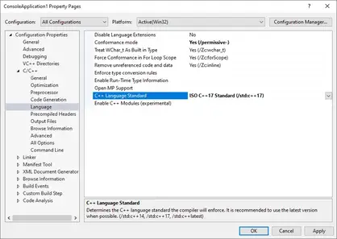
First, make sure the *Configuration* is set to “All Configurations”.
From there, you can set the *C++ Language Standard* to the version of C++ you wish to use.
Tip
We recommend choosing the latest standard “ISO C++ Latest (/std:c++latest)”, which will ensure you can use as many features as your compiler supports.
Make sure you’re selecting the language standard from the dropdown menu (don’t type it out).
Related content
For more information on Visual Studio language standard settings, Microsoft has aVisual Studio language standard reference document.
Setting a language standard in Code::Blocks
Code::Blocks may default to a pre-C++11 language standard. You’ll definitely want to check and ensure a more modern language standard is enabled.
The good news is that Code::Blocks allows setting your language standard globally, so you can set it once (rather than per-project). To do so, go to *Settings menu > Compiler…*:
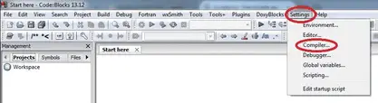
Then find the checkboxes labeled Have g++ follow the C++XX ISO C++ language standard [-std=c++XX], where XX is some number (e.g. 20, 17, etc…) representing a language standard:
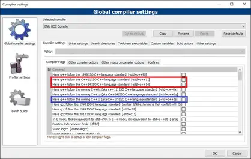
Tip
If C++20 or C++17 appears in this list, select the one that represents the latest ISO standard (e.g. select *Have g++ follow the C++20 ISO language standard*). If you see GNU standards in this list as well, ignore them.
If you do not see C++17 in this list, upgrade to the latest version of Code::Blocks.
If upgrading to the latest version is not possible for some reason, your version of Code::Blocks may have support for upcoming (or just released) versions of C++. If so, these will be labeled Have g++ follow the coming C++XX (aka C++YY) ISO C++ language standard [-std=c++XX] (see the blue box above). Select the latest version from this list.
Tip
As of the time of writing, the current version of Code::Blocks (20.03) does not support C++20. If you want to use C++20 with Code::Blocks:
Update your compiler by updating MinGW.Add the following in the “Other compiler options tab” of the “Global Compiler Settings” dialog:
-std=c++20 Setting a language standard in g++
For GCC/G++, you can pass compiler flags-std=c++11,-std=c++14,-std=c++17, or-std=c++20to enable C++11/14/17/20 support respectively. If you have GCC 8 or 9, you’ll need to use-std=c++2afor C++20 support instead.
Setting a language standard for VS Code
For VS Code, you can use compiler flags“-std=c++11”,,“-std=c++14”,,“-std=c++17”,, or“-std=c++20”,to enable C++11/14/17/20 support respectively. If you have GCC 8 or 9, you’ll need to use“-std=c++2a”,for C++20 support instead.
Place the appropriate language standard flag (including the double quotes and comma) in thetasks.jsonconfiguration file, in the“args”section, on its own line before“${file}”.
For C++20, insettings.json, change or add the following setting on its own line:“C_Cpp.default.cppStandard”: “c++20”.
Testing your compiler for C++17 compatibility
After enabling the C++17 language standard (or higher), you should be able to compile the following code without any warnings or errors.
#include <array>
#include <iostream>
#include <string_view>
#include <tuple>
#include <type_traits>
namespace a::b::c
{
inline constexpr std::string_view str{ "hello" };
}
template <class... T>
std::tuple<std::size_t, std::common_type_t<T...>> sum(T... args)
{
return { sizeof...(T), (args + ...) };
}
int main()
{
auto [iNumbers, iSum]{ sum(1, 2, 3) };
std::cout << a::b::c::str << ' ' << iNumbers << ' ' << iSum << '\n';
std::array arr{ 1, 2, 3 };
std::cout << std::size(arr) << '\n';
return 0;
}COPY
If you can’t compile this code, you either haven’t enabled C++17, or your compiler doesn’t fully support C++17. In the latter case, please install the latest version of your IDE/compiler,
Testing your compiler for C++20 compatibility
After enabling the C++20 language standard, you should be able to compile the following code without any warnings or errors.
#include <array>
#include <iostream>
#include <span>
struct Foo
{
int a{ };
int b{ };
int c{ };
};
consteval int sum(std::span<const int> a) // std::span and consteval
{
int s{ 0 };
for (auto n : a)
s += n;
return s;
}
auto sum(auto x, auto y) -> decltype(x + y) // abbreviated function templates
{
return x + y;
}
int main()
{
constexpr std::array a{ 3, 2, 1 };
constexpr int s{ sum(a) };
std::cout << s << '\n';
Foo f1{ .a = 1, .c = 3 }; // designated initializers
std::cout << sum(f1.a, f1.c) << '\n';
return 0;
}Exporting your configuration
Having to reselect all of your settings options every time you create a new project is burdensome. Fortunately, most IDEs provide a way to export your settings. This is typically done by creating a new project template with the settings you want, and then selecting that project template when you create a new project.
For Visual Studio users
In Visual Studio, this option is available via Project -> Export Template. Select “Project template”, add a name and optional description (e.g. C++20 console application), and then click “Finish”.
Next time you create a new project, you’ll see this template show up in your list of project templates.
Once you create a new project with this template, it may not open any files. You can open up your .cpp file in the Solution Explorer window by going to Solution -> <Project Name> -> Source Files -> <template name>.cpp.
For Code::Blocks users
In Code::Blocks, choose File -> Save project as template. Give your template a title, and save.
When you create a new project, you will find this template under the “User templates” option.
Where can I view the C++ standards document?
Each C++ language standard is described by a standards document, which is a formal technical document that is the authoritative source for the rules and requirements of a given language standard. The standards document is not designed for learning -- rather, it’s designed for compiler writers to be able to implement new language standards accurately. You will occasionally see people quoting the standards document when explaining how something works.
The approved C++ standards document for a given language standard is not available for free. There is a link to purchase the latest standard here.
When a new language standard is being developed, draft standards documents are published for review. These drafts *are* available online for free. The last draft standard before the approved standard is generally close enough to the official standard to use for most purposes. You can find the draft standards here.
Statements and the structure of a program
Welcome to the first primary chapter of these C++ tutorials!
In this chapter, we’ll take a first look at a number of topics that are essential to every C++ program. Because there are quite a few topics to cover, we’ll cover most at a fairly shallow level (just enough to get by). The goal of this chapter is to help you understand how basic C++ programs are constructed. By the end of the chapter, you will be able to write your own simple programs.
In future chapters, we’ll revisit the majority of these topics and explore them in more detail. We’ll also introduce new concepts that build on top of these.
In order to keep the lesson lengths manageable, topics may be split over several subsequent lessons. If you feel like some important concept isn’t covered in a lesson, it’s possible that it’s covered in the next lesson.
Statements
A computer program is a sequence of instructions that tell the computer what to do. A statement is a type of instruction that causes the program to perform some action.
Statements are by far the most common type of instruction in a C++ program. This is because they are the smallest independent unit of computation in the C++ language. In that regard, they act much like sentences do in natural language. When we want to convey an idea to another person, we typically write or speak in sentences (not in random words or syllables). In C++, when we want to have our program do something, we typically write statements.
Most (but not all) statements in C++ end in a semicolon. If you see a line that ends in a semicolon, it’s probably a statement.
In a high-level language such as C++, a single statement may compile into many machine language instructions.
For advanced readers
There are many different kinds of statements in C++:
Declaration statementsJump statementsExpression statementsCompound statementsSelection statements (conditionals)Iteration statements (loops)Try blocks
By the time you’re through with this tutorial series, you’ll understand what all of these are!
Functions and the main function
In C++, statements are typically grouped into units called functions. A function is a collection of statements that get executed sequentially (in order, from top to bottom). As you learn to write your own programs, you’ll be able to create your own functions and mix and match statements in any way you please (we’ll show how in a future lesson).
Rule
Every C++ program must have a special function named main (all lower case letters). When the program is run, the statements inside of *main* are executed in sequential order.
Programs typically terminate (finish running) after the last statement inside function main has been executed (though programs may abort early in some circumstances, or do some cleanup afterwards).
Functions are typically written to do a specific job. For example, a function named “max” might contain statements that figures out which of two numbers is larger. A function named “calculateGrade” might calculate a student’s grade from a set of test scores. We will talk a lot more about functions soon, as they are the most commonly used organizing tool in a program.
Author’s note
When discussing functions, it’s fairly common shorthand to append a pair of parenthesis to the end of the function’s name. For example, if you see the term main() or doSomething(), this is shorthand for functions named main or doSomething respectively. This helps differentiate functions from other things with names (such as variables) without having to write the word “function” each time.
Dissecting Hello world!
Now that you have a brief understanding of what statements and functions are, let’s return to our “Hello world” program and take a high-level look at what each line does in more detail.
#include <iostream>
int main()
{
std::cout << "Hello world!";
return 0;
} Line 1 is a special type of line called a preprocessor directive. This preprocessor directive indicates that we would like to use the contents of the iostream library, which is the part of the C++ standard library that allows us to read and write text from/to the console. We need this line in order to use std::cout on line 5. Excluding this line would result in a compile error on line 5, as the compiler wouldn’t otherwise know what std::cout is.
Line 2 is blank, and is ignored by the compiler. This line exists only to help make the program more readable to humans (by separating the #include preprocessor directive and the subsequent parts of the program).
Line 3 tells the compiler that we’re going to write (define) a function called *main*. As you learned above, every C++ program must have a *main* function or it will fail to link.
Lines 4 and 7 tell the compiler which lines are part of the main function. Everything between the opening curly brace on line 4 and the closing curly brace on line 7 is considered part of the main function. This is called the function body.
Line 5 is the first statement within function main, and is the first statement that will execute when we run our program. std::cout (which stands for “character output”) and the << operator allow us to send letters or numbers to the console to be output. In this case, we’re sending it the text “Hello world!”, which will be output to the console. This statement creates the visible output of the program.
Line 6 is a return statement. When an executable program finishes running, the program sends a value back to the operating system in order to indicate whether it ran successfully or not. This particular return statement returns the value of 0 to the operating system, which means “everything went okay!”. This is the last statement in the program that executes.
All of the programs we write will follow this general template, or a variation on it.
Author’s note
If parts (or all) of the above explanation are confusing, that’s to be expected at this point. This was just to provide a quick overview. Subsequent lessons will dig into all of the above topics, with plenty of additional explanation and examples.
You can compile and run this program yourself, and you will see that it outputs the following to the console:
Hello world!Syntax and syntax errors
In English, sentences are constructed according to specific grammatical rules that you probably learned in English class in school. For example, normal sentences end in a period. The rules that govern how sentences are constructed in a language is called syntax. If you forget the period and run two sentences together, this is a violation of the English language syntax.
C++ has a syntax too: rules about how your programs must be constructed in order to be considered valid. When you compile your program, the compiler is responsible for making sure your program follows the basic syntax of the C++ language. If you violate a rule, the compiler will complain when you try to compile your program, and issue you a syntax error.
Let’s see what happens if we omit the semicolon on line 5 of the “Hello world” program, like this:
#include <iostream>
int main()
{
std::cout << "Hello world!"
return 0;
} Feel free to compile this ill-formed program yourself.
Visual Studio produces the following error (your compiler may generate an error message with different wording):
c:\vcprojects\test1.cpp(6): error C2143: syntax error : missing ';' before 'return' This is telling you that you have a syntax error on line 6: the compiler was expecting a semicolon before the return statement, but it didn’t find one. Although the compiler will tell you which line of code it was compiling when it encountered the syntax error, the omission may actually be on a previous line. In this case, the error is actually at the end of line 5 (the compiler didn’t discover the issue until line 6).
Syntax errors are common when writing a program. Fortunately, they’re typically straightforward to find and fix, as the compiler will generally point you right at them. Compilation of a program will only complete once all syntax errors are resolved.
You can try deleting characters or even whole lines from the “Hello world” program to see different kinds of errors that get generated. Try restoring the missing semicolon at the end of line 5, and then deleting lines 1, 3, or 4 and see what happens.
Comments
A comment is a programmer-readable note that is inserted directly into the source code of the program. Comments are ignored by the compiler and are for the programmer’s use only.
In C++ there are two different styles of comments, both of which serve the same purpose: to help programmers document the code in some way.
Single-line comments
The// symbol begins a C++ single-line comment, which tells the compiler to ignore everything from the // symbol to the end of the line. For example:
std::cout << "Hello world!"; // Everything from here to the end of the line is ignored Typically, the single-line comment is used to make a quick comment about a single line of code.
std::cout << "Hello world!\n"; // std::cout lives in the iostream library
std::cout << "It is very nice to meet you!\n"; // these comments make the code hard to read
std::cout << "Yeah!\n"; // especially when lines are different lengths Having comments to the right of a line can make both the code and the comment hard to read, particularly if the line is long. If the lines are fairly short, the comments can simply be aligned (usually to a tab stop), like so:
std::cout << "Hello world!\n"; // std::cout lives in the iostream library
std::cout << "It is very nice to meet you!\n"; // this is much easier to read
std::cout << "Yeah!\n"; // don't you think so? However, if the lines are long, placing comments to the right can make your lines really long. In that case, single-line comments are often placed above the line it is commenting:
// std::cout lives in the iostream library
std::cout << "Hello world!\n";
// this is much easier to read
std::cout << "It is very nice to meet you!\n";
// don't you think so?
std::cout << "Yeah!\n";Author’s note
The statements above represent one of our first encounters with snippets of code. Because snippets aren’t full programs, they aren’t able to be compiled by themselves. Rather, they exist to demonstrate specific concepts in a concise manner.
If you would like to compile a snippet, you’ll need to turn it into a full program in order for it to compile. Typically, that program will look something like this:
#include <iostream>
int main()
{
// Replace this line with the snippet of code you'd like to compile
return 0;
}Multi-line comments
The /* and */ pair of symbols denotes a C-style multi-line comment. Everything in between the symbols is ignored.
/* This is a multi-line comment.
This line will be ignored.
So will this one. */ Since everything between the symbols is ignored, you will sometimes see programmers “beautify” their multi-line comments:
/* This is a multi-line comment.
* the matching asterisks to the left
* can make this easier to read
*/ Multi-line style comments can not be nested. Consequently, the following will have unexpected results:
/* This is a multi-line /* comment */ this is not inside the comment */
// The above comment ends at the first */, not the second */ When the compiler tries to compile this, it will ignore everything from the first /*``to the first ``*/. Since this is not inside the comment */ is not considered part of the comment, the compiler will try to compile it. That will inevitably result in a compile error.
This is one place where using a syntax highlighter can be really useful, as the different coloring for comment should make clear what’s considered part of the comment vs not.
Warning
Don’t use multi-line comments inside other multi-line comments. Wrapping single-line comments inside a multi-line comment is okay.
Proper use of comments
Typically, comments should be used for three things. First, for a given library, program, or function, comments are best used to describe what the library, program, or function, does. These are typically placed at the top of the file or library, or immediately preceding the function. For example:
// This program calculates the student's final grade based on their test and homework scores.// This function uses Newton's method to approximate the root of a given equation.// The following lines generate a random item based on rarity, level, and a weight factor. All of these comments give the reader a good idea of what the library, program, or function is trying to accomplish without having to look at the actual code. The user (possibly someone else, or you if you’re trying to reuse code you’ve previously written) can tell at a glance whether the code is relevant to what he or she is trying to accomplish. This is particularly important when working as part of a team, where not everybody will be familiar with all of the code.
Second, within a library, program, or function described above, comments can be used to describe how the code is going to accomplish its goal.
/* To calculate the final grade, we sum all the weighted midterm and homework scores
and then divide by the number of scores to assign a percentage, which is
used to calculate a letter grade. */// To generate a random item, we're going to do the following:
// 1) Put all of the items of the desired rarity on a list
// 2) Calculate a probability for each item based on level and weight factor
// 3) Choose a random number
// 4) Figure out which item that random number corresponds to
// 5) Return the appropriate item These comments give the user an idea of how the code is going to accomplish its goal without having to understand what each individual line of code does.
Third, at the statement level, comments should be used to describe *why* the code is doing something. A bad statement comment explains *what* the code is doing. If you ever write code that is so complex that needs a comment to explain *what* a statement is doing, you probably need to rewrite your statement, not comment it.
Here are some examples of bad line comments and good statement comments.
Bad comment:
// Set sight range to 0
sight = 0; Reason: We already can see that sight is being set to 0 by looking at the statement
Good comment:
// The player just drank a potion of blindness and can not see anything
sight = 0; Reason: Now we know why the player’s sight is being set to 0
Bad comment:
// Calculate the cost of the items
cost = quantity * 2 * storePrice; Reason: We can see that this is a cost calculation, but why is quantity multiplied by 2?
Good comment:
// We need to multiply quantity by 2 here because they are bought in pairs
cost = quantity * 2 * storePrice;Reason: Now we know why this formula makes sense.
Programmers often have to make a tough decision between solving a problem one way, or solving it another way. Comments are a great way to remind yourself (or tell somebody else) the reason you made one decision instead of another.
Good comments:
// We decided to use a linked list instead of an array because
// arrays do insertion too slowly.// We're going to use Newton's method to find the root of a number because
// there is no deterministic way to solve these equations. Finally, comments should be written in a way that makes sense to someone who has no idea what the code does. It is often the case that a programmer will say “It’s obvious what this does! There’s no way I’ll forget about this”. Guess what? It’s not obvious, and you will be amazed how quickly you forget. :) You (or someone else) will thank you later for writing down the what, how, and why of your code in human language. Reading individual lines of code is easy. Understanding what goal they are meant to accomplish is not.
Best practice
Comment your code liberally, and write your comments as if speaking to someone who has no idea what the code does. Don’t assume you’ll remember why you made specific choices.
Author’s note
Throughout the rest of this tutorial series, we’ll use comments inside code blocks to draw your attention to specific things, or help illustrate how things work (while ensuring the programs still compile). Astute readers will note that by the above standards, most of these comments are horrible. :) As you read through the rest of the tutorials, keep in mind that the comments are serving an intentional educational purpose, not trying to demonstrate what good comments look like.
Commenting out code
Converting one or more lines of code into a comment is called commenting out your code. This provides a convenient way to (temporarily) exclude parts of your code from being included in your compiled program.
To comment out a single line of code, simply use the // style comment to turn a line of code into a comment temporarily:
Uncommented out:
std::cout << 1; Commented out:
// std::cout << 1; To comment out a block of code, use // on multiple lines of code, or the /* */ style comment to turn the block of code into a comment temporarily.
Uncommented out:
std::cout << 1;
std::cout << 2;
std::cout << 3; Commented out:
// std::cout << 1;
// std::cout << 2;
// std::cout << 3; or
/*
std::cout << 1;
std::cout << 2;
std::cout << 3;
*/ There are quite a few reasons you might want to do this:
You’re working on a new piece of code that won’t compile yet, and you need to run the program. The compiler won’t let you compile the code if there are compiler errors. Commenting out the code that won’t compile will allow the program to compile so you can run it. When you’re ready, you can uncomment the code, and continue working on it.You’ve written new code that compiles but doesn’t work correctly, and you don’t have time to fix it until later. Commenting out the broken code will ensure the broken code doesn’t execute and cause problems until you can fix it.To find the source of an error. If a program isn’t producing the desired results (or is crashing), it can sometimes be useful to disable parts of your code to see if you can isolate what’s causing it to not work correctly. If you comment out one or more lines of code, and your program starts working as expected (or stops crashing), odds are whatever you last commented out was part of the problem. You can then investigate why those lines of code are causing the problem.You want to replace one piece of code with another piece of code. Instead of just deleting the original code, you can comment it out and leave it there for reference until you’re sure your new code works properly. Once you are sure your new code is working, you can remove the old commented out code. If you can’t get your new code to work, you can always delete the new code and uncomment the old code to revert to what you had before.
Commenting out code is a common thing to do while developing, so many IDEs provide support for commenting out a highlighted section of code. How you access this functionality varies by IDE.
For Visual Studio users
You can comment or uncomment a selection via Edit menu > Advanced > Comment Selection (or Uncomment Selection).
For Code::Blocks users
You can comment or uncomment a selection via Edit menu > Comment (or Uncomment, or Toggle comment, or any of the other comment tools).
For VS Code users
You can comment out a selection by pressing ctrl-k-c, and uncomment out a selection by pressing ctrl-k-u.
Tip
If you always use single line comments for your normal comments, then you can always use multi-line comments to comment out your code without conflict. If you use multi-line comments to document your code, then commenting-out code using comments can become more challenging.
If you do need to comment out a code block that contains multi-line comments, you can also consider using the#if 0preprocessor directive, which we discuss in lesson 2.10 — Introduction to the preprocessor.
Summary
At the library, program, or function level, use comments to describe what.Inside the library, program, or function, use comments to describe how.At the statement level, use comments to describe why.
Introduction to objects and variables
Data and values
We have learned that the majority of instructions in a program are statements, and that functions are groups of statements that execute sequentially. The statements inside the function perform actions that (hopefully) generate whatever result the program was designed to produce.
But how do programs actually produce results? They do so by manipulating (reading, changing, and writing) data. In computing, data is any information that can be moved, processed, or stored by a computer.
Key insight
Programs are collections of instructions that manipulate data to produce a desired result.
A program can acquire data to work with in many ways: from a file or database, over a network, from the user providing input on a keyboard, or from the programmer putting data directly into the source code of the program itself. In the “Hello world” program from the aforementioned lesson, the text “Hello world!” was inserted directly into the source code of the program, providing data for the program to use. The program then manipulates this data by sending it to the monitor to be displayed.
Data on a computer is typically stored in a format that is efficient for storage or processing (and is thus not human readable). Thus, when the “Hello World” program is compiled, the text “Hello world!” is converted into a more efficient format for the program to use (binary, which we’ll discuss in a future lesson).
A value is a letter (e.g. a), number(e.g. 5), text(e.g. Hello),or instance of some other useful concept that can be represented as data.
Objects and variables
All computers have memory, called RAM (short for random access memory), that is available for your programs to use. You can think of RAM as a series of numbered mailboxes that can each be used to hold a piece of data while the program is running.
In some older programming languages (like Applesoft BASIC), you could directly access these mailboxes (a statement could say something like go get the value stored in mailbox number 7532).
In C++, direct memory access is discouraged. Instead, we access memory indirectly through an object. An object is a region of storage (usually memory) that can store a value, and has other associated properties (that we’ll cover in future lessons). How the compiler and operating system work to assign memory to objects is beyond the scope of this lesson. But the key point here is that rather than say go get the value stored in mailbox number 7532, we can say, go get the value stored by this object. This means we can focus on using objects to store and retrieve values, and not have to worry about where in memory they’re actually being placed.
Objects can be named or unnamed (anonymous). A named object is called a variable, and the name of the object is called an identifier. In our programs, most of the objects we create and use will be variables.
Author’s note
In general programming, the term object typically refers to an unnamed object in memory, a variable, or a function. In C++, the term object has a narrower definition that excludes functions.
Key insight
Objects (and named objects, called variables) are used to store a value.
Variable instantiation
In order to create a variable, we use a special kind of declaration statement called a definition (we’ll clarify the difference between a declaration and definition later).
Here’s an example of defining a variable named x:
int x; // define a variable named x, of type int At compile time, when the compiler sees this statement, it makes a note to itself that we are defining a variable, giving it the name x, and that it is of type int (more on types in a moment). From that point forward (with some limitations that we’ll talk about in a future lesson), whenever the compiler sees the identifier x, it will know that we’re referencing this variable.
When the program is run (called runtime), the variable will be instantiated. Instantiation is a fancy word that means the object will be created and assigned a memory address. Variables must be instantiated before they can be used to store values. For the sake of example, let’s say that variable *x* is instantiated at memory location 140. Whenever the program uses variable x, it will access the value in memory location 140. An instantiated object is sometimes also called an instance.
Data types
far, we’ve covered that variables are a named region of storage that can store a data value (how exactly data is stored is a topic for a future lesson). A data type (more commonly just called a type) tells the compiler what type of value (e.g. a number, a letter, text, etc…) the variable will store.
In the above example, our variable x was given type int, which means variable x will represent an integer value. An integer is a number that can be written without a fractional component, such as 4, 27, 0, -2, or -12. For short, we can say that x is an integer variable.
In C++, the type of a variable must be known at compile-time (when the program is compiled), and that type can not be changed without recompiling the program. This means an integer variable can only hold integer values. If you want to store some other kind of value, you’ll need to use a different type.
Integers are just one of many types that C++ supports out of the box. For illustrative purposes, here’s another example of defining a variable using data type double:
double width; // define a variable named width, of type double C++ also allows you to create your own user-defined types. This is something we’ll do a lot of in future lessons, and it’s part of what makes C++ powerful.
For these introductory chapters, we’ll stick with integer variables because they are conceptually simple, but we’ll explore many of the other types C++ has to offer soon.
Defining multiple variables
It is possible to define multiple variables of the same type in a single statement by separating the names with a comma. The following 2 snippets of code are effectively the same:
int a;
int b; is the same as:
int a, b; When defining multiple variables this way, there are two common mistakes that new programmers tend to make (neither serious, since the compiler will catch these and ask you to fix them):
The first mistake is giving each variable a type when defining variables in sequence.
int a, int b; // wrong (compiler error)
int a, b; // correct The second mistake is to try to define variables of different types in the same statement, which is not allowed. Variables of different types must be defined in separate statements.
int a, double b; // wrong (compiler error)
int a; double b; // correct (but not recommended)
// correct and recommended (easier to read)
int a;
double b;Best practice
Although the language allows you to do so, avoid defining multiple variables of the same type in a single statement. Instead, define each variable in a separate statement on its own line (and then use a single-line comment to document what it is used for).
Summary
In C++, we use variables to access memory. Variables have an identifier, a type, and a value (and some other attributes that aren’t relevant here). A variable’s type is used to determine how the value in memory should be interpreted.
Variable assignment and initialization
we covered how to define a variable that we can use to store values. In this lesson, we’ll explore how to actually put values into variables and use those values.
As a reminder, here’s a short snippet that first allocates a single integer variable named x, then allocates two more integer variables named y and z:
int x; // define an integer variable named x
int y, z; // define two integer variables, named y and zVariable assignment
After a variable has been defined, you can give it a value (in a separate statement) using the = operator. This process is called copy assignment (or just assignment) for short.
int width; // define an integer variable named width
width = 5; // copy assignment of value 5 into variable width
// variable width now has value 5 Copy assignment is named such because it copies the value on the right-hand side of the *= operator* to the variable on the left-hand side of the operator. The = operator is called the assignment operator.
Here’s an example where we use assignment twice:
#include <iostream>
int main()
{
int width;
width = 5; // copy assignment of value 5 into variable width
// variable width now has value 5
width = 7; // change value stored in variable width to 7
// variable width now has value 7
return 0;
} When we assign value 7 to variable width, the value 5 that was there previously is overwritten. Normal variables can only hold one value at a time.
Warning
One of the most common mistakes that new programmers make is to confuse the assignment operator (=) with the equality operator (==). Assignment (=) is used to assign a value to a variable. Equality (==``) is used to test whether two operands are equal in value.
Initialization
One downside of assignment is that it requires at least two statements: one to define the variable, and one to assign the value.
These two steps can be combined. When a variable is defined, you can also provide an initial value for the variable at the same time. This is called initialization. The value used to initialize a variable is called an initializer.
Initialization in C++ is surprisingly complex, so we’ll present a simplified view here.
There are 6 basic ways to initialize variables in C++:
int a; // no initializer (default initialization)
int b = 5; // initializer after equals sign (copy initialization)
int c( 6 ); // initializer in parenthesis (direct initialization)
// List initialization methods (C++11) (preferred)
int d { 7 }; // initializer in braces (direct list initialization)
int e = { 8 }; // initializer in braces after equals sign (copy list initialization)
int f {}; // initializer is empty braces (value initialization) You may see the above forms written with different spacing (e.g. int d{7};). Whether you use extra spaces for readability or not is a matter of personal preference.
Default initialization
When no initialization value is provided (such as for variable a above), this is called default initialization. In most cases, default initialization leaves a variable with an indeterminate value.
We’ll discuss this case further in lesson (1.6 — Uninitialized variables and undefined behavior).
Copy initialization
When an initializer is provided after an equals sign, this is called copy initialization. This form of initialization was inherited from C.
int width = 5; // copy initialization of value 5 into variable width Much like copy assignment, this copies the value on the right-hand side of the equals into the variable being created on the left-hand side. In the above snippet, variable width will be initialized with value 5.
Copy initialization had fallen out of favor in modern C++ due to being less efficient than other forms of initialization for some complex types. However, C++17 remedied much of these issues, and copy initialization is now finding some new advocates. You will also find it used in older code (especially code ported from C), or by developers who simply think it looks better.
For advanced readers
Copy initialization is also used whenever values are implicitly copied or converted, such as when passing arguments to a function by value, returning from a function by value, or catching exceptions by value.
Direct initialization
When an initializer is provided inside parenthesis, this is called direct initialization.
int width( 5 ); // direct initialization of value 5 into variable width Direct initialization was initially introduced to allow for more efficient initialization of complex objects (those with class types, which we’ll cover in a future chapter). However, direct initialization has generally fallen out of favor in modern C++.
For advanced readers
Direct initialization is also used when values are explicitly cast to another type.
One of the reasons direct initialization has fallen out of favor is because it makes it hard to differentiate variables from functions. For example:
int x(); // forward declaration of function x
int x(0); // definition of variable x with initializer 0List initialization
The modern way to initialize objects in C++ is to use a form of initialization that makes use of curly braces: list initialization (also called uniform initialization or brace initialization).
List initialization comes in three forms:
int width { 5 }; // direct list initialization of value 5 into variable width
int height = { 6 }; // copy list initialization of value 6 into variable height
int depth {}; // value initialization (see next section) As an aside…
Prior to the introduction of list initialization, some types of initialization required using copy initialization, and other types of initialization required using direct initialization. List initialization was introduced to provide a more consistent initialization syntax (which is why it is sometimes called “uniform initialization”) that works in most cases.
Additionally, list initialization provides a way to initialize objects with a list of values (which is why it is called “list initialization”).
List initialization has an added benefit: it disallows “narrowing conversions”. This means that if you try to brace initialize a variable using a value that the variable can not safely hold, the compiler will produce an error. For example:
int width { 4.5 }; // error: a number with a fractional value can't fit into an int In the above snippet, we’re trying to assign a number (4.5) that has a fractional part (the .5 part) to an integer variable (which can only hold numbers without fractional parts).
Copy and direct initialization would simply drop the fractional part, resulting in the initialization of value 4 into variable width (your compiler may produce a warning about this, since losing data is rarely desired). However, with list initialization, the compiler will generate an error instead, forcing you to remedy this issue before proceeding.
Conversions that can be done without potential data loss are allowed.
To summarize, list initialization is generally preferred over the other initialization forms because it works in most cases, it disallows narrowing conversions, and it supports initialization with lists of values (something we’ll cover in a future lesson).
Best practice
Favor initialization using braces.
Value initialization and zero initialization
When a variable is list initialized using empty braces, value initialization takes place. In most cases, value initialization will initialize the variable to zero (or empty, if that’s more appropriate for a given type). In such cases where zeroing occurs, this is called zero initialization.
int width {}; // value initialization / zero initialization to value 0 Q: When should I initialize with { 0 } vs {}?
Use an explicit initialization value if you’re actually using that value.
int x { 0 }; // explicit initialization to value 0
std::cout << x; // we're using that zero value Use value initialization if the value is temporary and will be replaced.
int x {}; // value initialization
std::cin >> x; // we're immediately replacing that value Initialize your variables
Initialize your variables upon creation. You may eventually find cases where you want to ignore this advice for a specific reason (e.g. a performance critical section of code that uses a lot of variables), and that’s okay, as long the choice is made deliberately.
For more discussion on this topic, Bjarne Stroustrup (creator of C++) and Herb Sutter (C++ expert) make this recommendation themselves here.
Best practice
Initialize your variables upon creation.
Initializing multiple variables
In the last section, we noted that it is possible to define multiple variables *of the same type* in a single statement by separating the names with a comma:
int a, b; We also noted that best practice is to avoid this syntax altogether. However, since you may encounter other code that uses this style, it’s still useful to talk a little bit more about it, if for no other reason than to reinforce some of the reasons you should be avoiding it.
You can initialize multiple variables defined on the same line:
int a = 5, b = 6; // copy initialization
int c( 7 ), d( 8 ); // direct initialization
int e { 9 }, f { 10 }; // direct brace initialization (preferred)
int g = { 9 }, h = { 10 }; // copy brace initialization
int i {}, j {}; // value initialization Unfortunately, there’s a common pitfall here that can occur when the programmer mistakenly tries to initialize both variables by using one initialization statement:
int a, b = 5; // wrong (a is not initialized!)
int a = 5, b = 5; // correct In the top statement, variable “a” will be left uninitialized, and the compiler may or may not complain. If it doesn’t, this is a great way to have your program intermittently crash or produce sporadic results. We’ll talk more about what happens if you use uninitialized variables shortly.
The best way to remember that this is wrong is to consider the case of direct initialization or brace initialization:
int a, b( 5 );
int c, d{ 5 }; Because the parenthesis or braces are typically placed right next to the variable name, this makes it seem a little more clear that the value 5 is only being used to initialize variable b and d, not a or c.
Unused initialized variables and [[maybe_unused]]
Modern compilers will typically generate warnings if a variable is initialized but not used (since this is rarely desirable). And if “treat warnings as errors” is enabled, these warnings will be promoted to errors and cause the compilation to fail.
Consider the following innocent looking program:
int main()
{
int x { 5 }; // variable defined
// but not used anywhere
return 0;
} When compiling this with g++, the following error is generated:
prog.cc: In function 'int main()':
prog.cc:3:9: error: unused variable 'x' [-Werror=unused-variable] and the program fails to compile.
There are a few easy ways to fix this.
The first option is to turn off “treat warning as errors” temporarily (just don’t forget to turn it back on).
The second option is to simply use the variable somewhere:
#include <iostream>
int main()
{
int x { 5 };
std::cout << x; // variable now used somewhere
return 0;
} In C++17, the best solution is to use the [[maybe_unused]] attribute. This attribute tells the compiler to expect that the variable may not be used, so it will not generate unused variable warnings.
The following program should generate no warnings/errors, even though x is unused:
int main()
{
[[maybe_unused]] int x { 5 };
// since x is [[maybe_unused]], no warning generated
return 0;
}Introduction to iostream: cout, cin, and endl
In this lesson, we’ll talk more about std::cout, which we used in our Hello world! program to output the text Hello world! to the console. We’ll also explore how to get input from the user, which we will use to make our programs more interactive.
The input/output library
The input/output library (io library) is part of the C++ standard library that deals with basic input and output. We’ll use the functionality in this library to get input from the keyboard and output data to the console. The io part of iostream stands for input/output.
To use the functionality defined within the iostream library, we need to include the iostream header at the top of any code file that uses the content defined in iostream, like so:
#include <iostream>
// rest of code that uses iostream functionality herestd::cout
The iostream library contains a few predefined variables for us to use. One of the most useful is std::cout, which allows us to send data to the console to be printed as text. cout stands for “character output”.
As a reminder, here’s our Hello world program:
#include <iostream> // for std::cout
int main()
{
std::cout << "Hello world!"; // print Hello world! to console
return 0;
} In this program, we have included iostream so that we have access to std::cout. Inside our main function, we use std::cout, along with the insertion operator (<<), to send the text Hello world! to the console to be printed.
std::cout can not only print text, it can also print numbers:
#include <iostream> // for std::cout
int main()
{
std::cout << 4; // print 4 to console
return 0;
} This produces the result:
4 It can also be used to print the value of variables:
#include <iostream> // for std::cout
int main()
{
int x{ 5 }; // define integer variable x, initialized with value 5
std::cout << x; // print value of x (5) to console
return 0;
} This produces the result:
5 To print more than one thing on the same line, the insertion operator (<<) can be used multiple times in a single statement to concatenate (link together) multiple pieces of output. For example:
#include <iostream> // for std::cout
int main()
{
std::cout << "Hello" << " world!";
return 0;
} This program prints:
Hello world! Here’s another example where we print both text and the value of a variable in the same statement:
#include <iostream> // for std::cout
int main()
{
int x{ 5 };
std::cout << "x is equal to: " << x;
return 0;
} This program prints:
x is equal to: 5std::endl
What would you expect this program to print?
#include <iostream> // for std::cout
int main()
{
std::cout << "Hi!";
std::cout << "My name is Alex.";
return 0;
} You might be surprised at the result:
Hi!My name is Alex. Separate output statements don’t result in separate lines of output on the console.
If we want to print separate lines of output to the console, we need to tell the console when to move the cursor to the next line.
One way to do that is to use std::endl. When output with std::cout, std::endl prints a newline character to the console (causing the cursor to go to the start of the next line). In this context, endl stands for “end line”.
For example:
#include <iostream> // for std::cout and std::endl
int main()
{
std::cout << "Hi!" << std::endl; // std::endl will cause the cursor to move to the next line of the console
std::cout << "My name is Alex." << std::endl;
return 0;
} This prints:
Hi!
My name is Alex.Tip
In the above program, the second std::endl isn’t technically necessary, since the program ends immediately afterward. However, it serves a few useful purposes.
First, it helps indicate that the line of output is a “complete thought” (as opposed to partial output that is completed somewhere later in the code). In this sense, it functions similarly to using a period in standard English.
Second, it positions the cursor on the next line, so that if we later add additional lines of output (e.g. have the program say “bye!”), those lines will appear where we expect (rather than appended to the prior line of output).
Third, after running an executable from the command line, some operating systems do not output a new line before showing the command prompt again. If our program does not end with the cursor on a new line, the command prompt may appear appended to the prior line of output, rather than at the start of a new line as the user would expect.
Best practice
Output a newline whenever a line of output is complete.
std::cout is buffered
Consider a rollercoaster ride at your favorite amusement park. Passengers show up (at some variable rate) and get in line. Periodically, a train arrives and boards passengers (up to the maximum capacity of the train). When the train is full, or when enough time has passed, the train departs with a batch of passengers, and the ride commences. Any passengers unable to board the current train wait for the next one.
This analogy is similar to how output sent to std::cout is typically processed in C++. Statements in our program request that output be sent to the console. However, that output is typically not sent to the console immediately. Instead, the requested output “gets in line”, and is stored in a region of memory set aside to collect such requests (called a buffer). Periodically, the buffer is flushed, meaning all of the data collected in the buffer is transferred to its destination (in this case, the console).
Author’s note
To use another analogy, flushing a buffer is kind of like flushing a toilet. All of your collected “output” is transferred to … wherever it goes next. Eew.
Key insight
Buffered systems are often used in cases where processing a few large batches of data is more efficient than processing many smaller batches of data. Buffering maximizes overall throughput, at the cost of increasing response time.
This also means that if your program crashes, aborts, or is paused (e.g. for debugging purposes) before the buffer is flushed, any output still waiting in the buffer will not be displayed.
std::endl vs ‘\n’
Using std::endl can be a bit inefficient, as it actually does two jobs: it moves the cursor to the next line of the console, and it flushes the buffer. When writing text to the console, we typically don’t need to flush the buffer at the end of each line. It’s more efficient to let the system flush itself periodically (which it has been designed to do efficiently).
Because of this, use of the ‘\n’ character is typically preferred instead. The ‘\n’ character moves the cursor to the next line of the console, but doesn’t request a flush, so it will often perform better. The ‘\n’ character also tends to be easier to read since it’s both shorter and can be embedded into existing text.
Here’s an example that uses ‘\n’ in two different ways:
#include <iostream> // for std::cout
int main()
{
int x{ 5 };
std::cout << "x is equal to: " << x << '\n'; // Using '\n' standalone
std::cout << "And that's all, folks!\n"; // Using '\n' embedded into a double-quoted piece of text (note: no single quotes when used this way)
return 0;
} This prints:
x is equal to: 5
And that's all, folks! Note that when ‘\n’ is used by itself to move the cursor to the next line of the console, the single quotes are needed. When embedded into text that is already double-quoted, the single quotes aren’t needed.
We’ll cover what ‘\n’ is in more detail when we get to the lesson on chars
Best practice
Prefer ‘\n’ over std::endl when outputting text to the console.
Warning
‘\n’ uses a backslash (as do all special characters in C++), not a forward slash. Using a forward slash (e.g. ‘/n’) instead may result in unexpected behavior.
std::cin
std::cin is another predefined variable that is defined in the iostream library. Whereas std::cout prints data to the console using the insertion operator (<<std::cin>>). The input must be stored in a variable to be used.
#include <iostream> // for std::cout and std::cin
int main()
{
std::cout << "Enter a number: "; // ask user for a number
int x{ }; // define variable x to hold user input (and zero-initialize it)
std::cin >> x; // get number from keyboard and store it in variable x
std::cout << "You entered " << x << '\n';
return 0;
} Try compiling this program and running it for yourself. When you run the program, line 5 will print “Enter a number: “. When the code gets to line 8, your program will wait for you to enter input. Once you enter a number (and press enter), the number you enter will be assigned to variable x. Finally, on line 10, the program will print “You entered ” followed by the number you just entered.
For example (I entered 4):
Enter a number: 4
You entered 4 This is an easy way to get keyboard input from the user, and we will use it in many of our examples going forward. Note that you don’t need to use ‘\n’ when accepting input, as the user will need to press the *enter* key to have their input accepted, and this will move the cursor to the next line of the console.
Just like it is possible to output more than one bit of text in a single line, it is also possible to input more than one value on a single line:
#include <iostream> // for std::cout and std::cin
int main()
{
std::cout << "Enter two numbers separated by a space: ";
int x{ }; // define variable x to hold user input (and zero-initialize it)
int y{ }; // define variable y to hold user input (and zero-initialize it)
std::cin >> x >> y; // get two numbers and store in variable x and y respectively
std::cout << "You entered " << x << " and " << y << '\n';
return 0;
} This produces the output:
Enter two numbers separated by a space: 5 6
You entered 5 and 6Best practice
There’s some debate over whether it’s necessary to initialize a variable immediately before you give it a user provided value via another source (e.g. std::cin), since the user-provided value will just overwrite the initialization value. In line with our previous recommendation that variables should always be initialized, best practice is to initialize the variable first.
For now, it’s enough to know that std::cin will extract as much as it can, and any input characters that could not be extracted are left for a later extraction attempt.
For advanced readers
The C++ I/O library does not provide a way to accept keyboard input without the user having to press *enter*. If this is something you desire, you’ll have to use a third party library. For console applications, we’d recommend pdcurses, FXTUI, or cpp-terminal.Many graphical user libraries have their own functions to do this kind of thing.
Summary
New programmers often mix up std::cin, std::cout, the insertion operator (<<) and the extraction operator (>>). Here’s an easy way to remember:
std::cinandstd::coutalways go on the left-hand side of the statement.std::coutis used to output a value (cout = character output)std::cinis used to get an input value (cin = character input)<<is used with std::cout, and shows the direction that data is moving(ifstd::coutrepresents the console, the output data is moving from the variable to the console).std::cout << 4moves the value of 4 to the console>>is used withstd::cin,and shows the direction that data is moving(if std::cinrepresents the keyboard, the input data is moving from the keyboard to the variable).std::cin >> xmoves the value the user entered from the keyboard into x
Uninitialized variables and undefined behavior
Uninitialized variables
Unlike some programming languages, C/C++ does not initialize most variables to a given value (such as zero) automatically. Thus when a variable is given a memory address to use to store data, the default value of that variable is whatever (garbage) value happens to already be in that memory address! A variable that has not been given a known value (usually through initialization or assignment) is called an uninitialized variable.
Author’s note
Many readers expect the terms “initialized” and “uninitialized” to be strict opposites, but they aren’t quite! Initialization means the object was provided with an initial value at the point of definition. Uninitialized means the object has not been given a known value (through any means, including assignment). Therefore, an object that is not initialized but is then assigned a value is no longer uninitialized (because it has been given a known value).
To recap:
Initialization = The object is given a known value at the point of definition.Assignment = The object is given a known value beyond the point of definition.Uninitialized = The object has not been given a known value yet.
As an aside…
This lack of initialization is a performance optimization inherited from C, back when computers were slow. Imagine a case where you were going to read in 100,000 values from a file. In such case, you might create 100,000 variables, then fill them with data from the file.
If C++ initialized all of those variables with default values upon creation, this would result in 100,000 initializations (which would be slow), and for little benefit (since you’re overwriting those values anyway).
For now, you should always initialize your variables because the cost of doing so is miniscule compared to the benefit. Once you are more comfortable with the language, there may be certain cases where you omit the initialization for optimization purposes. But this should always be done selectively and intentionally.
Using the values of uninitialized variables can lead to unexpected results. Consider the following short program:
#include <iostream>
int main()
{
// define an integer variable named x
int x; // this variable is uninitialized because we haven't given it a value
// print the value of x to the screen
std::cout << x << '\n'; // who knows what we'll get, because x is uninitialized
return 0;
} In this case, the computer will assign some unused memory to x. It will then send the value residing in that memory location to std::cout, which will print the value (interpreted as an integer). But what value will it print? The answer is “who knows!”, and the answer may (or may not) change every time you run the program. When the author ran this program in Visual Studio, std::cout printed the value 7177728 one time, and 5277592 the next. Feel free to compile and run the program yourself (your computer won’t explode).
Warning
Some compilers, such as Visual Studio, will initialize the contents of memory to some preset value when you’re using a debug build configuration. This will not happen when using a release build configuration. Therefore, if you want to run the above program yourself, make sure you’re using a release build configuration For example, if you run the above program in a Visual Studio debug configuration, it will consistently print -858993460, because that’s the value (interpreted as an integer) that Visual Studio initializes memory with in debug configurations.
Most modern compilers will attempt to detect if a variable is being used without being given a value. If they are able to detect this, they will generally issue a compile-time warning or error. For example, compiling the above program on Visual Studio produced the following warning:
c:\VCprojects\test\test.cpp(11) : warning C4700: uninitialized local variable 'x' used If your compiler won’t let you compile and run the above program (e.g. because it treats the issue as an error), here is a possible solution to get around this issue:
#include <iostream>
void doNothing(int&) // Don't worry about what & is for now, we're just using it to trick the compiler into thinking variable x is used
{
}
int main()
{
// define an integer variable named x
int x; // this variable is uninitialized
doNothing(x); // make the compiler think we're assigning a value to this variable
// print the value of x to the screen (who knows what we'll get, because x is uninitialized)
std::cout << x << '\n';
return 0;
} Using uninitialized variables is one of the most common mistakes that novice programmers make, and unfortunately, it can also be one of the most challenging to debug (because the program may run fine anyway if the uninitialized variable happened to get assigned to a spot of memory that had a reasonable value in it, like 0).
This is the primary reason for the “always initialize your variables” best practice.
Undefined behavior
Using the value from an uninitialized variable is our first example of undefined behavior. Undefined behavior (often abbreviated UB) is the result of executing code whose behavior is not well-defined by the C++ language. In this case, the C++ language doesn’t have any rules determining what happens if you use the value of a variable that has not been given a known value. Consequently, if you actually do this, undefined behavior will result.
Code implementing undefined behavior may exhibit any of the following symptoms:
Your program produces different results every time it is run.Your program consistently produces the same incorrect result.Your program behaves inconsistently (sometimes produces the correct result, sometimes not).Your program seems like it’s working but produces incorrect results later in the program.Your program crashes, either immediately or later.Your program works on some compilers but not others.Your program works until you change some other seemingly unrelated code.
Or, your code may actually produce the correct behavior anyway.
Author’s note
Undefined behavior is like a box of chocolates. You never know what you’re going to get!
C++ contains many cases that can result in undefined behavior if you’re not careful. We’ll point these out in future lessons whenever we encounter them. Take note of where these cases are and make sure you avoid them.
Rule
Take care to avoid all situations that result in undefined behavior, such as using uninitialized variables.
Author’s note
One of the most common types of comment we get from readers says, “You said I couldn’t do X, but I did it anyway and my program works! Why?”.
There are two common answers. The most common answer is that your program is actually exhibiting undefined behavior, but that undefined behavior just happens to be producing the result you wanted anyway… for now. Tomorrow (or on another compiler or machine) it might not.
Alternatively, sometimes compiler authors take liberties with the language requirements when those requirements may be more restrictive than needed. For example, the standard may say, “you must do X before Y”, but a compiler author may feel that’s unnecessary, and make Y work even if you don’t do X first. This shouldn’t affect the operation of correctly written programs, but may cause incorrectly written programs to work anyway. So an alternate answer to the above question is that your compiler may simply be not following the standard! It happens. You can avoid much of this by making sure you’ve turned compiler extensions off
Implementation-defined behavior and unspecified behavior
Implementation-defined behavior means the behavior of some syntax is left up to the implementation (the compiler) to define. Such behaviors must be consistent and documented, but different compilers may produce different results.
Let’s look at a simple example of implementation-defined behavior:
#include <iostream>
int main()
{
std::cout << sizeof(int); // print how many bytes of memory an int value takes
return 0;
} On most compilers, this will produce4, but on others it may produce 2.
Unspecified behavior is almost identical to implementation-defined behavior in that the behavior is left up to the implementation, but the implementation is not required to document the behavior.
We generally want to avoid implementation-defined and unspecified behavior, as it means our program may not work as expected if compiled on a different compiler (or even on the same compiler if we change project settings that affect how the implementation behaves!)
Best practice
Avoid implementation-defined and unspecified behavior whenever possible, as they may cause your program to malfunction on other implementations.
Keywords and naming identifiers
Keywords
C++ reserves a set of 92 words (as of C++20) for its own use. These words are called keywords (or reserved words), and each of these keywords has a special meaning within the C++ language.
Here is a list of all the C++ keywords (through C++20):
| keyWords | keyWords | keyWords | keyWords |
|---|---|---|---|
| alignas | const_cast | int | static_assert |
| alignof | continue | long | static_cast |
| and | co_await (since C++20) | mutable | struct |
| and_eq | co_return (since C++20) | namespace | switch |
| asm | co_yield (since C++20) | new | template |
| auto | decltype | noexcept | this |
| bitand | default | not | thread_local |
| bitor | delete | not_eq | throw |
| bool | do | nullptr | true |
| break | double | operator | try |
| case | dynamic_cast | or | typedef |
| catch | else | or_eq | typeid |
| char | enum | private | typename |
| char8_t (since C++20) | explicit | protected | union |
| char16_t | export | public | unsigned |
| char32_t | extern | register | using |
| class | false | reinterpret_cast | virtual |
| compl | float | requires (since C++20) | void |
| concept (since C++20) | for | return | volatile |
| const | friend | short | wchar_t |
| consteval (since C++20) | goto | signed | while |
| constexpr | if | sizeof | xor |
| constinit (since C++20) | inline | static | xor_eq |
The keywords marked (C++20) were added in C++20. If your compiler is not C++20 compliant (or does have C++20 functionality, but it’s turned off by default), these keywords may not be functional.
C++ also defines special identifiers: override, final, import, and module. These have a specific meaning when used in certain contexts but are not reserved.
You have already run across some of these keywords, including *int* and *return*. Along with a set of operators, these keywords and special identifiers define the entire language of C++ (preprocessor commands excluded). Because keywords and special identifiers have special meaning, your IDEs will likely change the text color of these words to make them stand out from other identifiers.
By the time you are done with this tutorial series, you will understand what almost all of these words do!
Identifier naming rules
As a reminder, the name of a variable (or function, type, or other kind of item) is called an identifier. C++ gives you a lot of flexibility to name identifiers as you wish. However, there are a few rules that must be followed when naming identifiers:
The identifier can not be a keyword. Keywords are reserved.The identifier can only be composed of letters (lower or upper case), numbers, and the underscore character. That means the name can not contain symbols (except the underscore) nor whitespace (spaces or tabs).The identifier must begin with a letter (lower or upper case) or an underscore. It can not start with a number.C++ is case sensitive, and thus distinguishes between lower and upper case letters.nvalueis different than
nValueis different than
NVALUE.
Identifier naming best practices
Now that you know how you *can* name a variable, let’s talk about how you *should* name a variable (or function).
First, it is a convention in C++ that variable names should begin with a lowercase letter. If the variable name is one word, the whole thing should be written in lowercase letters.
int value; // correct
int Value; // incorrect (should start with lower case letter)
int VALUE; // incorrect (should start with lower case letter)
int VaLuE; // incorrect (see your psychiatrist) ;) Most often, function names are also started with a lowercase letter (though there’s some disagreement on this point). We’ll follow this convention, since function main (which all programs must have) starts with a lowercase letter, as do all of the functions in the C++ standard library.
Identifier names that start with a capital letter are typically used for user-defined types (such as structs, classes, and enumerations, all of which we will cover later).
If the variable or function name is multi-word, there are two common conventions: words separated by underscores, called snake_case, or intercapped (sometimes called camelCase, since the capital letters stick up like the humps on a camel).
int my_variable_name; // correct (separated by underscores/snake_case)
int my_function_name(); // correct (separated by underscores/snake_case)
int myVariableName; // correct (intercapped/CamelCase)
int myFunctionName(); // correct (intercapped/CamelCase)
int my variable name; // invalid (whitespace not allowed)
int my function name(); // invalid (whitespace not allowed)
int MyVariableName; // valid but incorrect (should start with lower case letter)
int MyFunctionName(); // valid but incorrect (should start with lower case letter) In this tutorial, we will typically use the intercapped approach because it’s easier to read (it’s easy to mistake an underscore for a space in dense blocks of code). But it’s common to see either -- the C++ standard library uses the underscore method for both variables and functions. Sometimes you’ll see a mix of the two: underscores used for variables and intercaps used for functions.
It’s worth noting that if you’re working in someone else’s code, it’s generally considered better to match the style of the code you are working in than to rigidly follow the naming conventions laid out above.
Best practice
When working in an existing program, use the conventions of that program (even if they don’t conform to modern best practices). Use modern best practices when you’re writing new programs.
Second, you should avoid naming your identifiers starting with an underscore, as these names are typically reserved for OS, library, and/or compiler use.
Third, your identifiers should make clear what the value they are holding means (particularly if the units aren’t obvious). Identifiers should be named in a way that would help someone who has no idea what your code does be able to figure it out as quickly as possible. In 3 months, when you look at your program again, you’ll have forgotten how it works, and you’ll thank yourself for picking variable names that make sense.
However, giving a trivial variable an overly complex name impedes overall understanding of what the program is doing almost as much as giving a widely used identifier an inadequate name. Therefore, a good rule of thumb is to make the length of an identifier proportional to how widely it is used. An identifier with a trivial use can have a short name (e.g. such as *i*). An identifier that is used more broadly (e.g. a function that is called from many different places in a program) should have a longer and more descriptive name (e.g. instead of *open*, try *openFileOnDisk*).
| int ccount | Bad | What does the c before “count” stand for? |
|---|---|---|
| int customerCount | Good | Clear what we’re counting |
| int i | Either | Okay if use is trivial, bad otherwise |
| int index | Either | Okay if obvious what we’re indexing |
| int totalScore | Either | Okay if there’s only one thing being scored, otherwise too ambiguous |
| int _count | Bad | Do not start names with underscore |
| int count | Either | Okay if obvious what we’re counting |
| int data | Bad | What kind of data? |
| int time | Bad | Is this in seconds, minutes, or hours? |
| int minutesElapsed | Good | Descriptive |
| int value1, value2 | Either | Can be hard to differentiate between the two |
| int numApples | Good | Descriptive |
| int monstersKilled | Good | Descriptive |
| int x, y | Either | Okay if use is trivial, bad otherwise |
In any case, avoid abbreviations (unless they are common/unambiguous). Although they reduce the time you need to write your code, they make your code harder to read. Code is read more often than it is written, the time you saved while writing the code is time that every reader, including the future you, wastes when reading it. If you’re looking to write code faster, use your editor’s auto-complete feature.
Finally, a clarifying comment can go a long way. For example, say we’ve declared a variable named numberOfChars that is supposed to store the number of characters in a piece of text. Does the text “Hello World!” have 10, 11, or 12 characters? It depends on whether we’re including whitespace or punctuation. Rather than naming the variable numberOfCharsIncludingWhitespaceAndPunctuation, which is rather lengthy, a well placed comment on the declaration line should help the user figure it out:
// holds number of chars in a piece of text -- including whitespace and punctuation!
int numberOfChars;Whitespace and basic formatting
Whitespace is a term that refers to characters that are used for formatting purposes. In C++, this refers primarily to spaces, tabs, and newlines. The C++ compiler generally ignores whitespace, with a few minor exceptions (when processing text literals). For this reason, we say that C++ is a whitespace-independent language.
Consequently, the following statements all do the exact same thing:
std::cout << "Hello world!";
std::cout << "Hello world!";
std::cout << "Hello world!";
std::cout
<< "Hello world!"; Even the last statement that is split over two lines compiles just fine.
The following functions all do the same thing:
int add(int x, int y) { return x + y; }
int add(int x, int y) {
return x + y; }
int add(int x, int y)
{ return x + y; }
int add(int x, int y)
{
return x + y;
}One exception where the C++ compiler *does* pay attention to whitespace is inside quoted text, such as
"Hello world!"is different than:
"Hello world!"and each prints out exactly as you’d expect.
Newlines are not allowed in quoted text:
std::cout << "Hello
world!"; // Not allowed! Quoted text separated by nothing but whitespace (spaces, tabs, or newlines) will be concatenated:
std::cout << "Hello "
"world!"; // prints "Hello world!" Another exception where the C++ compiler pays attention to whitespace is with // comments. Single-line comments only last to the end of the line. Thus doing something like this will get you in trouble:
std::cout << "Hello world!"; // Here is a single-line comment
this is not part of the commentBasic formatting
Unlike some other languages, C++ does not enforce any kind of formatting restrictions on the programmer (remember, trust the programmer!). Many different methods of formatting C++ programs have been developed throughout the years, and you will find disagreement on which ones are best. Our basic rule of thumb is that the best styles are the ones that produce the most readable code, and provide the most consistency.
Here are our recommendations for basic formatting:
It’s fine to use either tabs or spaces for indentation (most IDEs have a setting where you can convert a tab press into the appropriate number of spaces). Developers who prefer spaces tend to do so because it makes the formatting self-describing -- code that is spaced using spaces will always look correct regardless of editor. Proponents of using tabs wonder why you wouldn’t use the character designed to do indentation for indentation, especially as you can set the width to whatever your preference is. There’s no right answer here -- and debating it is like arguing whether cake or pie is better. It ultimately comes down to personal preference.
Either way, we recommend you set your tabs to 4 spaces worth of indentation. Some IDEs default to 3 spaces of indentation, which is fine too.
There are two acceptable styles for function braces.
The Google C++ style guide recommends putting the opening curly brace on the same line as the statement:
int main() {
} The justification for this is that it reduces the amount of vertical whitespace (you aren’t devoting an entire line to nothing but the opening curly brace), so you can fit more code on a screen. More code on a screen makes the program easier to understand.
However, we prefer the common alternative, where the opening brace appears on its own line:
int main()
{
} This enhances readability, and is less error prone since your brace pairs should always be indented at the same level. If you get a compiler error due to a brace mismatch, it’s very easy to see where.
Each statement within curly braces should start one tab in from the opening brace of the function it belongs to. For example:
int main()
{
std::cout << "Hello world!\n"; // tabbed in one tab (4 spaces)
std::cout << "Nice to meet you.\n"; // tabbed in one tab (4 spaces)
}Lines should not be too long. Typically, 80 characters has been the de facto standard for the maximum length a line should be. If a line is going to be longer, it should be split (at a reasonable spot) into multiple lines. This can be done by indenting each subsequent line with an extra tab, or if the lines are similar, by aligning it with the line above (whichever is easier to read).
int main()
{
std::cout << "This is a really, really, really, really, really, really, really, "
"really long line\n"; // one extra indentation for continuation line
std::cout << "This is another really, really, really, really, really, really, really, "
"really long line\n"; // text aligned with the previous line for continuation line
std::cout << "This one is short\n";
} This makes your lines easier to read. On modern wide-screen monitors, it also allows you to place two windows with similar code side by side and compare them more easily.
Best practice
Consider keeping your lines to 80 chars or less in length.
Tip
Many editors have a built-in feature (or plugin/extension) that will show a line (called a “column guide”) at a given column (e.g. at 80 characters), so you can easily see when your lines are getting too long. To see if your editor supports this, do a search on your editor’s name + “Column guide”.
If a long line is split with an operator (eg. << or +), the operator should be placed at the beginning of the next line, not the end of the current line
std::cout << 3 + 4
+ 5 + 6
* 7 * 8; This helps make it clearer that subsequent lines are continuations of the previous lines, and allows you to align the operators on the left, which makes for easier reading.
Use whitespace to make your code easier to read by aligning values or comments or adding spacing between blocks of code.
Harder to read:
cost = 57;
pricePerItem = 24;
value = 5;
numberOfItems = 17; Easier to read:
cost = 57;
pricePerItem = 24;
value = 5;
numberOfItems = 17; Harder to read:
std::cout << "Hello world!\n"; // cout lives in the iostream library
std::cout << "It is very nice to meet you!\n"; // these comments make the code hard to read
std::cout << "Yeah!\n"; // especially when lines are different lengths Easier to read:
std::cout << "Hello world!\n"; // cout lives in the iostream library
std::cout << "It is very nice to meet you!\n"; // these comments are easier to read
std::cout << "Yeah!\n"; // especially when all lined up Harder to read:
// cout lives in the iostream library
std::cout << "Hello world!\n";
// these comments make the code hard to read
std::cout << "It is very nice to meet you!\n";
// especially when all bunched together
std::cout << "Yeah!\n"; Easier to read:
// cout lives in the iostream library
std::cout << "Hello world!\n";
// these comments are easier to read
std::cout << "It is very nice to meet you!\n";
// when separated by whitespace
std::cout << "Yeah!\n"; We will follow these conventions throughout this tutorial, and they will become second nature to you. As we introduce new topics to you, we will introduce new style recommendations to go with those features.
Ultimately, C++ gives you the power to choose whichever style you are most comfortable with, or think is best. However, we highly recommend you utilize the same style that we use for our examples. It has been battle tested by thousands of programmers over billions of lines of code, and is optimized for success. One exception: If you are working in someone else’s code base, adopt their styles. It’s better to favor consistency than your preferences.
Automatic formatting
Most modern IDEs will help you format your code as you type it in (e.g. when you create a function, the IDE will automatically indent the statements inside the function body).
However, as you add or remove code, or change the IDE’s default formatting, or paste in a block of code that has different formatting, the formatting can get messed up. Fixing the formatting for part or all of a file can be a headache. Fortunately, modern IDEs typically contain an automatic formatting feature that will reformat either a selection (highlighted with your mouse) or an entire file.
For Visual Studio users
In Visual Studio, the automatic formatting options can be found under Edit > Advanced > Format Document and Edit > Advanced > Format Selection.
For Code::Blocks users
In Code::Blocks, the automatic formatting options can be found under Right mouse click > Format use AStyle.
For easier access, we recommend adding a keyboard shortcut to auto-format the active file.
There are also external tools that can be used to automatically format code.clang-format is a popular one.
Best practice
Using the automatic formatting feature is highly recommended to keep your code’s formatting style consistent.
Introduction to literals and operators
Literals
Consider the following two statements:
std::cout << "Hello world!";
int x { 5 }; What are ‘”Hello world!”‘ and ‘5’? They are literals. A literal (also known as a literal constant) is a fixed value that has been inserted directly into the source code.
Literals and variables both have a value (and a type). Unlike a variable (whose value can be set and changed through initialization and assignment respectively), the value of a literal is fixed (5 is always 5). This is why literals are called constants.
To further highlight the difference between literals and variables, let’s examine this short program:
#include <iostream>
int main()
{
std::cout << 5 << '\n'; // print the value of a literal
int x { 5 };
std::cout << x << '\n'; // print the value of a variable
return 0;
} On line 5, we’re printing the value5to the console. When the compiler compiles this, it will generate code that causes ``std::cout to print the value5. This value5is compiled into the executable and can be used directly.
On line 7, we’re creating a variable namedx, and initializing it with value5. The compiler will generate code that copies the literal value5into whatever memory location is given tox. On line 8, when we printx, the compiler will generate code that causes std::cout to print the value at the memory location ofx (which has value5).
Thus, both output statements do the same thing (print the value 5). But in the case of the literal, the value5can be printed directly. In the case of the variable, the value5must be fetched from the memory the variable represents.
This also explains why a literal is constant while a variable can be changed. A literal’s value is placed directly in the executable, and the executable itself can’t be changed after it is created. A variable’s value is placed in memory, and the value of memory can be changed while the executable is running.
Key insight
Literals are values that are inserted directly into the source code. These values usually appear directly in the executable code (unless they are optimized out).
Objects and variables represent memory locations that hold values. These values can be fetched on demand.
Operators
In mathematics, an operation is a mathematical process involving zero or more input values (called operands) that produces a new value (called an output value). The specific operation to be performed is denoted by a symbol called an operator.
For example, as children we all learn that 2 + 3 equals 5. In this case, the literals 2 and 3 are the operands, and the symbol + is the operator that tells us to apply mathematical addition on the operands to produce the new value 5.
In C++, operations work as you’d expect. For example:
#include <iostream>
int main()
{
std::cout << 1 + 2 << '\n';
return 0;
} In this program, the literals1and2are operands to the plus (+) operator, which produces the output value3. This output value is then printed to the console. In C++, the output value of an operation is often called a return value.
You are likely already quite familiar with standard arithmetic operators from common usage in mathematics, including addition (+), subtraction (-), multiplication (*), and division (/). In C++, assignment (=) is an operator as well, as are insertion (<<), extraction (>>), and equality (==). While most operators have symbols for names (e.g. +, or ==), there are also a number of operators that are keywords (e.g. new, delete, and throw).
Author’s note
For reasons that will become clear when we discuss operators in more detail, for operators that are symbols, it is common to append the operator’s symbol to the word operator.
For example, the plus operator would be writtenoperator+, and the extraction operator would be writtenoperator>>.
The number of operands that an operator takes as input is called the operator’s **arity**. Few people know what this word means, so don’t drop it in a conversation and expect anybody to have any idea what you’re talking about. Operators in C++ come in four different arities:
Unary operators act on one operand. An example of a unary operator is the-operator. For example, given-5,operator-takes literal operand5and flips its sign to produce new output value-5`
Binary operators act on two operands (often called *left* and *right*, as the left operand appears on the left side of the operator, and the right operand appears on the right side of the operator). An example of a binary operator is the+operator. For example, given3 + 4,operator+takes the left operand3and the right operand4and applies mathematical addition to produce new output value7. The insertion (<<) and extraction (>>) operators are binary operators, takingstd::coutorstd::cinon the left side, and the value to output or variable to input to on the right side.
Ternary operators act on three operands. There is only one of these in C++ (the conditional operator), which we’ll cover later.
Nullary operators act on zero operands. There is also only one of these in C++ (the throw operator), which we’ll also cover later.
Note that some operators have more than one meaning depending on how they are used. For example,operator-has two contexts. It can be used in unary form to invert a number’s sign (e.g. to convert5to-5, or vice versa), or it can be used in binary form to do subtraction (e.g.4 - 3).
Chaining operators
Operators can be chained together such that the output of one operator can be used as the input for another operator. For example, given the following:2 * 3 + 4, the multiplication operator goes first, and converts left operand2and right operand3into return value6(which becomes the left operand for the plus operator). Next, the plus operator executes, and converts left operand6and right operand4into new value10`.
We’ll talk more about the order in which operators execute when we do a deep dive into the topic of operators. For now, it’s enough to know that the arithmetic operators execute in the same order as they do in standard mathematics: Parenthesis first, then Exponents, then Multiplication & Division, then Addition & Subtraction. This ordering is sometimes abbreviated *PEMDAS*, or expanded to the mnemonic “Please Excuse My Dear Aunt Sally”.
Author’s note
In some countries, PEMDAS is taught as PEDMAS, BEDMAS, BODMAS, or BIDMAS instead.
Return values and side effects
Most operators in C++ just use their operands to calculate a return value. For example,-5produces return value-5and2 + 3produces return value5. There are a few operators that do not produce return values(such as delete and throw). We’ll cover what these do later.
Some operators have additional behaviors. An operator that has some observable effect beyond producing a return value is said to have a side effect. For example, whenx = 5is evaluated, the assignment operator has the side effect of assigning the value5to variablex. The changed value ofxis observable (e.g. by printing the value ofx) even after the operator has finished executing.std::cout << 5has the side effect of printing5to the console. We can observe the fact that5has been printed to the console even afterstd::cout << 5has finished executing.
Operators with side effects are usually called for the behavior of the side effect rather than for the return value (if any) those operators produce.
For advanced readers
For the operators that we call primarily for their return values (e.g.operator+oroperator*), it’s usually obvious what their return values will be (e.g. the sum or product of the operands).
For the operators we call primarily for their side effects (e.g.operator=oroperator<<), it’s not always obvious what return values they produce (if any). For example, what return value would you expectx = 5to have?
Bothoperator=and operator<< (when used to output values to the console) return their left operand. Thus, x = 5 returns x, and std::cout << 5 returns std::cout. This is done so that these operators can be chained.`
For example,x = y = 5evaluates asx = (y = 5). Firsty = 5assigns5toy. This operation then returnsy, which can then be assigned tox.
std::cout << "Hello " << "world" evaluates as (std::cout << "Hello ") << "world!". This first prints "Hello "`` to the console. This operation returns std::cout,which can then be used to print“world!”to the console as well.